ED 502 শিক্ষায় নীতি, কৌশল ও নেতৃত্ব
শিক্ষানীতি কীভাবে তৈরি ও বাস্তবায়িত হয়, কৌশল কীভাবে নীতিকে কাজে রূপ দেয় এবং বাংলাদেশে তা কার্যকর করতে নেতৃত্ব কীভাবে গড়ে ওঠে
এটি ইংরেজি পাঠ নোটের বাংলা সংস্করণ। পাঠতালিকা ও তথ্যসূত্রের বইয়ের নাম মূল ভাষায় রাখা হয়েছে, যাতে লাইব্রেরিতে সহজে খুঁজে পান।
সূচিপত্র
এই কোর্স সম্পর্কে
নীতি, কৌশল ও নেতৃত্ব হলো শিক্ষাগত পরিবর্তনের পরস্পর সংযুক্ত তিনটি স্তর। নীতি (policy) শিক্ষাব্যবস্থার অভিপ্রেত দিকনির্দেশনা ও মূল্যবোধ ঘোষণা করে; কৌশল (strategy) এসব অভিপ্রায়কে অগ্রাধিকারভিত্তিক ও সম্পদসমৃদ্ধ পরিকল্পনায় রূপান্তর করে; এবং নেতৃত্ব (leadership) মন্ত্রণালয়, অধিদপ্তর, প্রতিষ্ঠান ও শ্রেণিকক্ষে পরিকল্পনাকে বাস্তবে রূপ দিতে মানুষকে সংগঠিত ও উদ্বুদ্ধ করে। যেকোনো স্তরে দুর্বলতা এই শৃঙ্খল ভেঙে দেয়: কৌশলবিহীন একটি সুষ্ঠু নীতি কেবল বাগাড়ম্বর হয়ে থাকে, আর নেতৃত্ববিহীন একটি ভালো কৌশল কেবল কাগজেই সীমাবদ্ধ থাকে।
ED 502 এসব ধারণা ও এদের পারস্পরিক সম্পর্ক সম্পর্কে একটি সমালোচনামূলক উপলব্ধি গড়ে তোলে। ইউনিট ১-এ শিক্ষানীতির অর্থ, পরিবেশ-প্রতিবেশ, এখতিয়ার, কুশীলব ও প্রক্রিয়া, বিশেষত বাংলাদেশের প্রেক্ষাপটে, পরীক্ষা করা হয়েছে। ইউনিট ২-এ কৌশল, কৌশলগত পরিকল্পনা ও ব্যবস্থাপনা, বিদ্যালয় উন্নয়ন এবং প্রবেশাধিকার, ন্যায্যতা ও মানের কৌশল আলোচিত হয়েছে। ইউনিট ৩ ও ৪-এ নেতৃত্বের তত্ত্ব, ধরন, দক্ষতা ও বিকাশ, জেন্ডারভিত্তিক পার্থক্যসহ, অন্তর্ভুক্ত। ইউনিট ৫-এ এসব ধারণা নীতি বাস্তবায়ন, আত্ম-ব্যবস্থাপনা, দল গঠন, মানুষকে প্রেষণা দান, যোগাযোগ ও দ্বন্দ্ব ব্যবস্থাপনায় প্রয়োগ করা হয়েছে।
কোর্সের উদ্দেশ্য
নীতি, কৌশল ও নেতৃত্বের মূল ধারণাসমূহ এবং এদের পারস্পরিক সম্পর্ক সম্পর্কে সমালোচনামূলক উপলব্ধি গড়ে তোলা।
শিক্ষানীতি ও কৌশলকে প্রভাবিত করে এমন চ্যালেঞ্জ, বিষয়, কুশীলব ও অংশীজন বিশ্লেষণ করা।
বৈশ্বিক প্রেক্ষাপটে বাংলাদেশের নীতি প্রণয়ন ও বাস্তবায়ন প্রক্রিয়া ব্যাখ্যা করা।
শিক্ষাপ্রতিষ্ঠান ও বৃহত্তর শিক্ষাব্যবস্থায় কৌশলগত পরিকল্পনা ও ব্যবস্থাপনা প্রয়োগ করা।
জেন্ডার দৃষ্টিভঙ্গিসহ নেতৃত্বের তত্ত্ব, ধরন ও যোগ্যতা সম্পর্কে পূর্ণাঙ্গ ধারণা অর্জন করা।
প্রাক-প্রাথমিক থেকে উচ্চশিক্ষা, মাদ্রাসা ও কারিগরি ও বৃত্তিমূলক শিক্ষা ও প্রশিক্ষণ (TVET) পর্যন্ত নীতি ও কর্মসূচি বাস্তবায়নের জন্য নেতৃত্বের দক্ষতা (দল গঠন, প্রেষণা, যোগাযোগ, দ্বন্দ্ব ব্যবস্থাপনা) অর্জন ও প্রয়োগ করা।
প্রতিটি ইউনিট এম.এড-এর অফিশিয়াল পাঠ্যসূচির ক্রম অনুসরণ করে। প্রথমে মূল আলোচনা পড়ুন, তারপর বক্সগুলো, এরপর পরীক্ষার প্রস্তুতি প্রশ্ন দিয়ে নিজেকে যাচাই করুন।
সবুজাভ নীল বক্স = সংজ্ঞা ও পড়ার কৌশল। সোনালি বক্স = অবশ্যই মনে রাখার বিষয় ও পরীক্ষার প্রস্তুতি। সবুজ বক্স = বাংলাদেশ প্রেক্ষাপট। ধূসর বক্স = মাস্টার্স পর্যায়ে প্রত্যাশিত সমালোচনামূলক দৃষ্টিভঙ্গি। হলুদাভ "ব্যবহারের আগে যাচাই করুন" বক্সে এমন নীতিগত তথ্য ও পরিসংখ্যান আছে যা বদলায়: পরীক্ষার আগে BANBEIS, শিক্ষা মন্ত্রণালয়, DPE, NCTB, UGC, UNESCO বা বিশ্বব্যাংকের সর্বশেষ তথ্যের সঙ্গে মিলিয়ে নিন।
শেষ অধ্যায়টি বিশ্ববিদ্যালয় পরীক্ষার ধরনে একটি প্রশ্নব্যাংক (উত্তরসহ MCQ, সংক্ষিপ্ত ও রচনামূলক প্রশ্ন), এরপর APA 7th রীতিতে পূর্ণ তথ্যসূত্র।
ইউনিট ১: শিক্ষায় নীতির পরিচিতি
অধ্যায়ের সারসংক্ষেপ
নীতি (policy) শব্দটি গ্রিক polis (নগর-রাষ্ট্র) এবং লাতিন politia (রাষ্ট্র, প্রশাসন) থেকে উদ্ভূত। দৈনন্দিন প্রশাসনিক ব্যবহারে নীতি হলো অভিপ্রায়ের একটি বিবৃতি, যা ঘোষিত লক্ষ্যের দিকে সিদ্ধান্ত ও কার্যক্রমকে পরিচালিত করে।
এই অধ্যায়ে আলোচিত বিষয়: নীতির অর্থ ও সংজ্ঞা; নীতি ও সিদ্ধান্তের সম্পর্ক; শিক্ষানীতির পরিবেশ-প্রতিবেশ (ecology); শিক্ষায় নীতি প্রণয়নের এখতিয়ার (jurisdiction); নীতি প্রণয়নে প্রভাবক, কুশীলব ও অংশীজন; নীতি প্রণয়ন প্রক্রিয়া; বাংলাদেশে শিক্ষানীতি প্রণয়ন ও বাস্তবায়নের বিকাশ; বিশ্বায়ন ও শিক্ষানীতির প্রেক্ষাপট।
মূল পরিভাষা:
- সরকারি নীতি (Public policy) (Dye, 1972): "সরকার যা করতে বা না করতে বেছে নেয়, তা-ই।" ডাই-এর সংজ্ঞা আমাদের মনে করিয়ে দেয় যে নিষ্ক্রিয়তাও (যেমন, প্রাইভেট কোচিং নিয়ন্ত্রণ না করা) একটি নীতি।
- নীতি (Easton, 1953): একটি সমাজের জন্য "মূল্যবোধের কর্তৃত্বপূর্ণ বণ্টন"।
- পাঠ্য ও ডিসকোর্স হিসেবে নীতি (Ball, 1993): নীতি একাধারে পাঠ্য (text; এমন দলিল যা রচয়িতারা সংকেতায়িত করেন এবং শিক্ষকদের মতো পাঠকেরা প্রায়ই ভিন্নভাবে তার অর্থোদ্ধার করেন) এবং ডিসকোর্স (discourse; অর্থের এমন কাঠামো যা কী ভাবা যায় তার সীমা নির্ধারণ করে…
- শিক্ষানীতি (Bell & Stevenson, 2006): শিক্ষানীতি হলো শিক্ষায় "কী করা হবে বা হবে না তা নির্ধারণের ক্ষমতা সম্পর্কিত"; এটি "মূল্যবোধের কার্যকর বিবৃতি", যা বিভিন্ন গোষ্ঠীর মধ্যকার প্রতিদ্বন্দ্বিতা থেকে উদ্ভূত হয়।
মনে রাখার মূল বিষয়:
- কর্মকর্তা, প্রধান শিক্ষক ও শিক্ষকদের হাজার হাজার সিদ্ধান্তের মাধ্যমে নীতি বাস্তবায়িত হয়।
শিক্ষাক্রমে যা বলা হয়েছেইউনিট ১: শিক্ষায় নীতির পরিচিতি · ১০ সংযোগ ঘণ্টা
এই ইউনিট শেষে শিক্ষার্থীরা যা পারবে
- নীতির মৌলিক ধারণা এবং শিক্ষায় সিদ্ধান্ত গ্রহণের সঙ্গে এর সম্পর্ক ব্যাখ্যা করা
- শিক্ষানীতির পরিবেশ-প্রতিবেশ ও এখতিয়ার বর্ণনা করা
- নীতি প্রণয়নে বিভিন্ন প্রভাবকের প্রভাব ও কুশীলবদের ভূমিকা চিহ্নিত ও মূল্যায়ন করা
- বাংলাদেশে শিক্ষায় নীতি প্রণয়ন ও বাস্তবায়ন প্রক্রিয়া বর্ণনা করা
- শিক্ষানীতি, প্রেক্ষাপট ও বিশ্বায়নের মধ্যে সম্পর্ক স্থাপন করা
- অর্থ, সংজ্ঞা ও ধারণা, নীতি ও সিদ্ধান্তের মধ্যে সম্পর্ক
- শিক্ষানীতির পরিবেশ-প্রতিবেশ
- শিক্ষায় নীতি প্রণয়নের এখতিয়ার
- শিক্ষায় নীতি ও নীতি প্রণয়ন প্রক্রিয়ার প্রভাবক, কুশীলব ও অংশীজন
- নীতি প্রণয়নের জন্য দায়িত্বপ্রাপ্ত সংস্থা ও প্রতিষ্ঠান (সরকারি সংস্থা, সংসদ,
- বাংলাদেশে শিক্ষানীতি প্রণয়ন প্রক্রিয়া ও বাস্তবায়নের বিকাশ
- বিশ্বায়ন ও শিক্ষানীতির প্রেক্ষাপট
১.১ নীতির অর্থ ও সংজ্ঞা
নীতি (policy) শব্দটি গ্রিক polis (নগর-রাষ্ট্র) এবং লাতিন politia (রাষ্ট্র, প্রশাসন) থেকে উদ্ভূত। দৈনন্দিন প্রশাসনিক ব্যবহারে নীতি হলো অভিপ্রায়ের একটি বিবৃতি, যা ঘোষিত লক্ষ্যের দিকে সিদ্ধান্ত ও কার্যক্রমকে পরিচালিত করে।
সরকারি নীতি (Public policy) (Dye, 1972): "সরকার যা করতে বা না করতে বেছে নেয়, তা-ই।" ডাই-এর সংজ্ঞা আমাদের মনে করিয়ে দেয় যে নিষ্ক্রিয়তাও (যেমন, প্রাইভেট কোচিং নিয়ন্ত্রণ না করা) একটি নীতি।
নীতি (Easton, 1953): একটি সমাজের জন্য "মূল্যবোধের কর্তৃত্বপূর্ণ বণ্টন"। শিক্ষানীতি নির্ধারণ করে কাদের মূল্যবোধ (ন্যায্যতা, দক্ষতা, উৎকর্ষ, ধর্মীয় বা ধর্মনিরপেক্ষ পরিচয়, জাতীয় ভাষা) বিদ্যালয় শিক্ষাকে রূপ দেবে।
পাঠ্য ও ডিসকোর্স হিসেবে নীতি (Ball, 1993): নীতি একাধারে পাঠ্য (text) (এমন দলিল যা রচয়িতারা সংকেতায়িত করেন এবং শিক্ষকদের মতো পাঠকেরা প্রায়ই ভিন্নভাবে তার অর্থোদ্ধার করেন) এবং ডিসকোর্স (discourse) (অর্থের এমন কাঠামো যা কী ভাবা ও বলা যায় তার সীমা নির্ধারণ করে, যেমন "মান", "জবাবদিহি" বা "দক্ষতা")।
শিক্ষানীতি (Bell & Stevenson, 2006): শিক্ষানীতি হলো শিক্ষায় "কী করা হবে বা হবে না তা নির্ধারণের ক্ষমতা সম্পর্কিত"; এটি "মূল্যবোধের কার্যকর বিবৃতি", যা বিভিন্ন গোষ্ঠীর মধ্যকার প্রতিদ্বন্দ্বিতা থেকে উদ্ভূত হয়।
একটি ভালো শিক্ষানীতির বৈশিষ্ট্য
লক্ষ্যভিত্তিক এবং জাতীয় মূল্যবোধ ও সংবিধানের ওপর প্রতিষ্ঠিত।
প্রমাণনির্ভর এবং প্রেক্ষাপটের বিবেচনায় বাস্তবায়নযোগ্য।
অন্যান্য খাতভিত্তিক নীতির (অর্থ, শ্রম, তথ্য ও যোগাযোগ প্রযুক্তি (ICT), জেন্ডার, প্রতিবন্ধিতা) সঙ্গে সামঞ্জস্যপূর্ণ।
নমনীয় এবং পর্যায়ক্রমে পর্যালোচিত।
একীভূত ও ন্যায্য; অংশীজনদের অংশগ্রহণে প্রণীত।
দায়িত্ব, সম্পদ ও সময়সীমা সম্পর্কে সুস্পষ্ট।
আইনি কাঠামো ও পরিবীক্ষণ ব্যবস্থাসংবলিত।
নীতির প্রকারভেদ
| ভিত্তি | প্রকারভেদ | শিক্ষাবিষয়ক উদাহরণ |
|---|---|---|
| লোয়ি-র (Lowi, 1964) নীতি-ক্ষেত্র | বণ্টনমূলক, পুনর্বণ্টনমূলক, নিয়ন্ত্রণমূলক, গঠনমূলক | বিনামূল্যে পাঠ্যপুস্তক (বণ্টনমূলক); দরিদ্র মেয়েদের উপবৃত্তি (পুনর্বণ্টনমূলক); কোচিং সেন্টার সংক্রান্ত বিধি (নিয়ন্ত্রণমূলক); নতুন বিশ্ববিদ্যালয় কমিশন গঠন (গঠনমূলক) |
| বিষয়বস্তু | মৌলিক বনাম পদ্ধতিগত | শিক্ষাক্রমের বিষয়বস্তু বনাম শিক্ষক নিয়োগের বিধি |
| স্তর | ম্যাক্রো (জাতীয়), মেসো (অধিদপ্তর, বোর্ড, জেলা), মাইক্রো (প্রতিষ্ঠান) | জাতীয় শিক্ষানীতি ২০১০ (NEP 2010); মাধ্যমিক ও উচ্চশিক্ষা অধিদপ্তরের (DSHE) পরিপত্র; বিদ্যালয়ের ভর্তি নীতি |
| প্রভাব | বস্তুগত বনাম প্রতীকী | বিদ্যালয়ে খাদ্য কর্মসূচির বাজেট বনাম "মানের বছর" ঘোষণা |
| আনুষ্ঠানিকতা | সুস্পষ্ট (লিখিত) বনাম অন্তর্নিহিত (চর্চা, ঐতিহ্য) | লিখিত মূল্যায়ন নির্দেশিকা বনাম অনানুষ্ঠানিক উত্তরণ (প্রমোশন) চর্চা |
সারণি ১. সরকারি নীতি ও শিক্ষানীতির শ্রেণিবিভাগ
১.২ নীতি ও সিদ্ধান্তের সম্পর্ক
সিদ্ধান্ত (decision) হলো কোনো নির্দিষ্ট মুহূর্তে বিভিন্ন বিকল্পের মধ্য থেকে একটি বেছে নেওয়া; নীতি হলো একটি স্থায়ী নির্দেশিকা, যা বহু সিদ্ধান্তের কাঠামো নির্ধারণ করে। হারবার্ট সাইমন (Simon, 1947) সংগঠনকে সিদ্ধান্ত গ্রহণকারী ব্যবস্থা হিসেবে বর্ণনা করেছেন, যেখানে নীতি সেই মূল্যভিত্তিক পূর্বশর্ত (value premises) নির্ধারণ করে, যার আওতায় কর্মকর্তারা সিদ্ধান্ত নেন।
| নীতি | সিদ্ধান্ত |
|---|---|
| বিস্তৃত, সাধারণ নির্দেশিকা | সুনির্দিষ্ট পছন্দ |
| দীর্ঘমেয়াদি ও চলমান | প্রায়ই একবারের বা স্বল্পমেয়াদি |
| উচ্চতর স্তরে প্রণীত | সকল স্তরে গৃহীত |
| কার্যক্রমের পূর্বশর্ত ও সীমা নির্ধারণ করে | কোনো নির্দিষ্ট ক্ষেত্রে নীতি প্রয়োগ করে |
| উদাহরণ: "প্রাথমিক বয়সী সকল শিশু বিনা বেতনে বিদ্যালয়ে পড়বে" | উদাহরণ: "নীতি অনুযায়ী জন্মনিবন্ধন সনদ ছাড়াই এই শিশুকে ভর্তি করুন" |
সারণি ২. নীতি বনাম সিদ্ধান্ত
কর্মকর্তা, প্রধান শিক্ষক ও শিক্ষকদের হাজার হাজার সিদ্ধান্তের মাধ্যমে নীতি বাস্তবায়িত হয়। এ কারণেই মাইকেল লিপস্কি (Lipsky, 1980) মাঠপর্যায়ের সরকারি কর্মচারীদের "মাঠপর্যায়ের আমলা (street-level bureaucrats)" বলেছেন: তাঁদের স্ববিবেচনামূলক সিদ্ধান্তই কার্যত বাস্তবে নীতিতে পরিণত হয়।
১.৩ শিক্ষানীতির পরিবেশ-প্রতিবেশ
নীতির পরিবেশ-প্রতিবেশ (ecology) বলতে সেই শক্তিসমূহের পরিবেশকে বোঝায়, যার মধ্যে নীতি গঠিত ও বাস্তবে প্রতিফলিত হয়। বেল ও স্টিভেনসন (Bell and Stevenson, 2006) একটি বহুল ব্যবহৃত মডেল প্রস্তাব করেছেন, যা বৃহত্তর পরিবেশকে দৈনন্দিন চর্চার সঙ্গে যুক্ত করে।
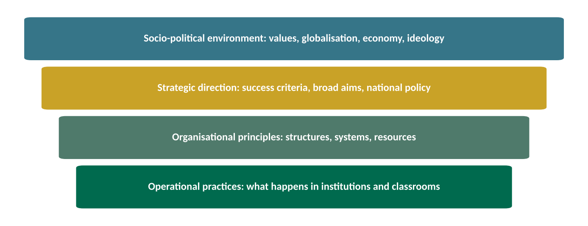
চিত্র ১. বেল ও স্টিভেনসনের (Bell and Stevenson, 2006) নীতি প্রক্রিয়ার মডেল
বাংলাদেশে শিক্ষানীতিকে রূপদানকারী পরিবেশগত প্রভাবকগুলো হলো:
| প্রভাবক | বাংলাদেশে দৃষ্টান্ত |
|---|---|
| ঐতিহাসিক | পরীক্ষা ও বহুধারার শিক্ষার ঔপনিবেশিক উত্তরাধিকার; ১৯৭২ সালের সংবিধানে প্রতিফলিত মুক্তিযুদ্ধের আদর্শ |
| রাজনৈতিক | দলীয় নির্বাচনী ইশতেহার, সরকার পরিবর্তন ও নীতির উল্টো দিকে যাত্রা (যেমন, ২০২৪ সালের পর শিক্ষাক্রম পরিবর্তন) |
| অর্থনৈতিক | স্বল্পোন্নত দেশ (LDC) থেকে উত্তরণ (২০২৬ সালে নির্ধারিত), দক্ষ শ্রমশক্তির চাহিদা, সীমিত রাজস্ব পরিসর |
| আর্থ-সামাজিক-সাংস্কৃতিক | ধর্ম ও মাদ্রাসা শিক্ষা, ভাষা (বাংলা, ইংরেজি, ক্ষুদ্র নৃগোষ্ঠীর ভাষা), জেন্ডার রীতিনীতি |
| জনমিতিক | বিপুল তরুণ জনগোষ্ঠী, নগরায়ণ, অভিবাসন |
| বৈশ্বিক | SDG 4, দাতা সংস্থার কর্মসূচি, র্যাংকিং, শ্রমবাজারের বিশ্বায়ন |
| প্রযুক্তিগত | ডিজিটাল বাংলাদেশ / স্মার্ট বাংলাদেশ কর্মসূচি, কোভিড-১৯ (COVID-19)-পরবর্তী অনলাইন শিখন |
| পরিবেশগত | জলবায়ু-ঝুঁকি, দুর্যোগ-সহনশীল বিদ্যালয়, ডেল্টা প্ল্যান ২১০০ (Delta Plan 2100) |
সারণি ৩. শিক্ষানীতিতে পরিবেশগত প্রভাবকসমূহ
বাংলাদেশের স্বল্পোন্নত দেশ (LDC) থেকে উত্তরণের সময়সূচির বর্তমান অবস্থা (এই লেখার সময় ২০২৬ সালের নভেম্বরে নির্ধারিত) এবং বর্তমান জাতীয় ডিজিটাল কর্মসূচিগুলোর নাম যাচাই করে নিন।
১.৪ শিক্ষায় নীতি প্রণয়নের এখতিয়ার
এখতিয়ার (jurisdiction) বলতে বোঝায় কোন নীতি প্রণয়নের আইনগত কর্তৃত্ব কার হাতে। বাংলাদেশের মতো এককেন্দ্রিক রাষ্ট্রে শিক্ষানীতির কর্তৃত্ব জাতীয় পর্যায়ে কেন্দ্রীভূত।
| স্তর / সংস্থা | এখতিয়ার |
|---|---|
| সংবিধান | মৌলিক নীতিমালা নির্ধারণ করে (অনুচ্ছেদ ১৫, ১৭, ২৮), যা সকল নীতিকে মেনে চলতে হয় |
| সংসদ (জাতীয় সংসদ) | আইন প্রণয়ন করে (যেমন, প্রাথমিক শিক্ষা (বাধ্যতামূলককরণ) আইন ১৯৯০ (CPEA 1990), বেসরকারি বিশ্ববিদ্যালয় আইন ২০১০, অ্যাক্রেডিটেশন কাউন্সিল আইন ২০১৭); বাজেট অনুমোদন করে; শিক্ষা বিষয়ক সংসদীয় স্থায়ী কমিটি মন্ত্রণালয়ের কার্যক্রম পর্যালোচনা করে |
| মন্ত্রিসভা | জাতীয় নীতি অনুমোদন করে (যেমন, জাতীয় শিক্ষানীতি ২০১০) |
| শিক্ষা মন্ত্রণালয় (MoE): মাধ্যমিক ও উচ্চশিক্ষা বিভাগ; কারিগরি ও মাদ্রাসা শিক্ষা বিভাগ | মাধ্যমিক, উচ্চমাধ্যমিক, উচ্চশিক্ষা, কারিগরি, বৃত্তিমূলক ও মাদ্রাসা শিক্ষানীতি |
| প্রাথমিক ও গণশিক্ষা মন্ত্রণালয় (MoPME) | প্রাক-প্রাথমিক, প্রাথমিক ও উপানুষ্ঠানিক শিক্ষা |
| অন্যান্য মন্ত্রণালয় | শ্রম (দক্ষতা), মহিলা ও শিশু বিষয়ক (প্রারম্ভিক শৈশব বিকাশ, ECD), সমাজকল্যাণ (প্রতিবন্ধিতা), আইসিটি বিভাগ, ধর্ম বিষয়ক (ইসলামিক ফাউন্ডেশন, মক্তব শিক্ষা) |
| সংবিধিবদ্ধ সংস্থা | বিশ্ববিদ্যালয় মঞ্জুরি কমিশন (UGC) (উচ্চশিক্ষা), জাতীয় শিক্ষাক্রম ও পাঠ্যপুস্তক বোর্ড (NCTB) (শিক্ষাক্রম ও পাঠ্যপুস্তক), শিক্ষা বোর্ডসমূহ (পরীক্ষা), বাংলাদেশ শিক্ষাতথ্য ও পরিসংখ্যান ব্যুরো (BANBEIS) (পরিসংখ্যান), জাতীয় শিক্ষা ব্যবস্থাপনা একাডেমি (NAEM) (ব্যবস্থাপনা প্রশিক্ষণ), বাংলাদেশ অ্যাক্রেডিটেশন কাউন্সিল, BTEB (কারিগরি শিক্ষা), NTRCA (বেসরকারি শিক্ষক নিবন্ধন ও সুপারিশ) |
| মাঠপর্যায় | অধিদপ্তরসমূহ (DPE, DSHE, DTE, DME), জেলা ও উপজেলা কার্যালয়: জাতীয় নীতির আওতায় বাস্তবায়ন ও অভিযোজন করে |
| প্রতিষ্ঠান | গভর্নিং বডি, বিদ্যালয় ব্যবস্থাপনা কমিটি, একাডেমিক কাউন্সিল: জাতীয় বিধির আওতায় প্রাতিষ্ঠানিক নীতি |
| বিচার বিভাগ | হাইকোর্টের রায় নীতিকে রূপ দেয় (যেমন, ২০১১ সালে শারীরিক শাস্তি বিষয়ে নির্দেশনা) |
সারণি ৪. বাংলাদেশে শিক্ষানীতি প্রণয়নের এখতিয়ার
মন্ত্রণালয়ের কাঠামো ও বিভাগের নাম পরিবর্তিত হয়; শিক্ষা মন্ত্রণালয় (MoE) ও প্রাথমিক ও গণশিক্ষা মন্ত্রণালয়ের (MoPME) বর্তমান সাংগঠনিক কাঠামো (organogram) নিশ্চিত হয়ে নিন। শারীরিক শাস্তিকে অসাংবিধানিক ঘোষণা করে হাইকোর্ট বিভাগের ২০১১ সালের রায়টি প্রায়ই উদ্ধৃত হয়; উদ্ধৃত করার আগে মামলার রেফারেন্স নিশ্চিত হয়ে নিন।
১.৫ নীতি প্রণয়নে প্রভাবক, কুশীলব ও অংশীজন
প্রভাবক (factors) হলো নৈর্ব্যক্তিক শক্তি (অর্থনীতি, মতাদর্শ, প্রমাণ, সংকট)। কুশীলব (actors) হলো সেইসব ব্যক্তি ও সংগঠন, যারা নীতি প্রণয়নে অংশ নেয়। অংশীজন (stakeholders) হলো তারা সবাই, যারা কোনো নীতিকে প্রভাবিত করে বা নীতির দ্বারা প্রভাবিত হয়।

চিত্র ২. শিক্ষানীতিতে কুশীলব ও অংশীজন
| চতুর্ভাগ | অংশীজন (উদাহরণ) | কৌশল |
|---|---|---|
| উচ্চ ক্ষমতা, উচ্চ আগ্রহ | মন্ত্রণালয়, মন্ত্রিসভা, অর্থ বিভাগ, প্রধান দাতা সংস্থা | ঘনিষ্ঠভাবে ব্যবস্থাপনা করুন; নকশা প্রণয়নে সম্পৃক্ত করুন |
| উচ্চ ক্ষমতা, নিম্ন আগ্রহ | কিছু বিষয়ে অর্থ ও পরিকল্পনা মন্ত্রণালয়, বিচার বিভাগ | সন্তুষ্ট রাখুন |
| নিম্ন ক্ষমতা, উচ্চ আগ্রহ | শিক্ষক, অভিভাবক, শিক্ষার্থী, এনজিও | অবহিত রাখুন; তাদের মতপ্রকাশের সুযোগ জোরদার করুন |
| নিম্ন ক্ষমতা, নিম্ন আগ্রহ | কারিগরি বিষয়ে সাধারণ জনগণ | পরিবীক্ষণ করুন; সহজভাবে যোগাযোগ করুন |
সারণি ৫. অংশীজন বিশ্লেষণ (ক্ষমতা-আগ্রহ ছক, Mendelow, 1991 অনুসারে)
১.৬ নীতি প্রণয়ন প্রক্রিয়া
নীতিচক্র (policy cycle) (পর্যায়ভিত্তিক অনুসন্ধানী কাঠামো)

চিত্র ৩. নীতিচক্র (Lasswell, 1956; Howlett et al., 2009 অনুসারে)
| মডেল | প্রধান চিন্তাবিদ | মূল ধারণা | শিক্ষায় প্রয়োগ |
|---|---|---|---|
| যৌক্তিক-সামগ্রিক (Rational-comprehensive) | সাইমন (সীমিত যৌক্তিকতা); ধ্রুপদি পরিকল্পনা | লক্ষ্য নির্ধারণ, সকল বিকল্পের তালিকা প্রণয়ন, ব্যয় ও সুফল মূল্যায়ন, সর্বোত্তমটি বেছে নেওয়া | শিক্ষা কমিশনের প্রতিবেদনগুলো প্রায়ই এ ধরনের আকাঙ্ক্ষা পোষণ করে |
| ক্রমবর্ধিষ্ণু (Incremental) ("কোনোমতে এগিয়ে চলা") | লিন্ডব্লম (Lindblom, 1959) | বিদ্যমান চর্চা থেকে ছোট ছোট ধাপে নীতির পরিবর্তন; দর-কষাকষি | বার্ষিক বাজেট ক্রমান্বয়ে বৃদ্ধি পায় |
| মিশ্র পর্যবেক্ষণ (Mixed scanning) | এৎজিওনি (Etzioni, 1967) | মৌলিক সিদ্ধান্তের জন্য বিস্তৃত পর্যবেক্ষণ, অন্যান্য সিদ্ধান্তের জন্য বিস্তারিত ক্রমবর্ধিষ্ণু বিশ্লেষণ | পঞ্চবার্ষিক পরিকল্পনা ও বার্ষিক কর্মসূচি |
| আবর্জনার ঝুড়ি (Garbage can) | কোহেন, মার্চ ও ওলসেন (Cohen, March & Olsen, 1972) | "সংগঠিত নৈরাজ্যে" সমস্যা, সমাধান, অংশগ্রহণকারী ও সিদ্ধান্তের সুযোগ মিশে যায় | বিশ্ববিদ্যালয়; তাৎক্ষণিক (অ্যাডহক) সংস্কার |
| বহুধারা (Multiple streams) | কিংডন (Kingdon, 1984) | সমস্যা, নীতি ও রাজনীতির ধারা যখন একটি "নীতি-জানালায়" (policy window) মিলিত হয়, তখন নীতির পরিবর্তন ঘটে | কোভিড-১৯ ডিজিটাল শিক্ষানীতির জন্য একটি জানালা খুলে দিয়েছিল |
| অভিজাত / গোষ্ঠী (Elite / group) | মিলস (Mills); ট্রুম্যান (Truman) | নীতি অভিজাতদের পছন্দ বা গোষ্ঠীগত চাপের প্রতিফলন ঘটায় | এমপিও (MPO) ও জাতীয়করণের জন্য শিক্ষক সংগঠনগুলোর চাপ |
| বল-এর নীতিচক্র | বো, বল ও গোল্ড (Bowe, Ball & Gold, 1992) | তিনটি প্রেক্ষাপট: প্রভাব, পাঠ্য প্রণয়ন, চর্চা; চর্চার মধ্যে নীতি নতুন করে সৃষ্টি হয় | শিক্ষাক্রমের দলিল ও শ্রেণিকক্ষের মধ্যকার ব্যবধান ব্যাখ্যা করে |
সারণি ৬. নীতি প্রণয়নের মডেলসমূহ

চিত্র ৪. কিংডনের বহুধারা: তিনটি ধারা মিলিত হলে একটি নীতি-জানালা খুলে যায়
১.৭ বাংলাদেশে শিক্ষানীতি প্রণয়ন ও বাস্তবায়নের বিকাশ
বাংলাদেশে একটি প্রধান শিক্ষানীতির সাধারণ ধারাক্রম হলো:

চিত্র ৫. বাংলাদেশে শিক্ষানীতির সাধারণ প্রক্রিয়া
| অঙ্গীকার | অবস্থা (নির্দেশক) |
|---|---|
| এক বছরের প্রাক-প্রাথমিক শিক্ষা | ২০১০ সাল থেকে সরকারি প্রাথমিক বিদ্যালয়ে চালু; ৪+ বছর বয়সীদের জন্য দুই বছরে সম্প্রসারণের পরিকল্পনা রয়েছে |
| প্রাথমিক শিক্ষা অষ্টম শ্রেণি পর্যন্ত সম্প্রসারণ | সমগ্র ব্যবস্থায় বাস্তবায়িত হয়নি; সীমিতসংখ্যক বিদ্যালয়ে পরীক্ষামূলকভাবে চালু হয়েছে |
| দশম শ্রেণি পর্যন্ত একক অভিন্ন শিক্ষাক্রম | জাতীয় শিক্ষাক্রম রূপরেখা ২০২১ (NCF 2021)-এর মাধ্যমে চেষ্টা করা হয়েছিল (নবম ও দশম শ্রেণিতে বিভাগ বিলুপ্ত করে) এবং ২০২৫ সালে তা প্রত্যাহার করা হয় |
| স্থায়ী শিক্ষা কমিশন | গঠিত হয়নি |
| শিক্ষা আইন | খসড়া এখনো প্রণীত (পাস) হয়নি |
| বিনামূল্যে পাঠ্যপুস্তক | বাস্তবায়িত: ২০১০ সাল থেকে প্রতি বছর জানুয়ারিতে সারা দেশে বিনামূল্যে পাঠ্যপুস্তক বিতরণ করা হয় |
| সৃজনশীল (কাঠামোবদ্ধ) প্রশ্ন | ২০০৮ থেকে ২০১০ সাল ও তৎপরবর্তী সময়ে বাস্তবায়িত; গাইড বইয়ের ওপর নির্ভরশীলতার কারণে ব্যাপকভাবে সমালোচিত |
| পৃথক কমিশনের মাধ্যমে শিক্ষক নিয়োগ | আংশিক: বেসরকারি শিক্ষকদের জন্য NTRCA |
সারণি ৭. জাতীয় শিক্ষানীতি ২০১০-এর নির্বাচিত অঙ্গীকারসমূহের বাস্তবায়ন অবস্থা (নির্দেশক)
"অবস্থা" কলামটিকে নির্দেশক হিসেবে বিবেচনা করুন এবং পরীক্ষায় ব্যবহারের আগে শিক্ষা মন্ত্রণালয় ও জাতীয় শিক্ষাক্রম ও পাঠ্যপুস্তক বোর্ডের (NCTB) সর্বশেষ দলিল ও সংবাদ থেকে হালনাগাদ করে নিন; ২০২৩ সালের পর থেকে কয়েকটি বিষয়ে পরিবর্তন এসেছে।
বাস্তবায়নে নীতি কেন ব্যর্থ হয়
মাইকেল ফুলান (Fullan, 2016) যুক্তি দেন যে পরিবর্তন তখনই ব্যর্থ হয়, যখন তা অতিরিক্ত ভারাক্রান্ত, খণ্ডিত, সম্পদস্বল্প এবং বাস্তবায়নকারীদের কাছে অস্পষ্ট থাকে। বাংলাদেশে নীতি ও চর্চার ব্যবধানের (policy-practice gap) সাধারণ কারণগুলো হলো: ঘন ঘন নীতি পরিবর্তন; শিক্ষকদের সীমিত সম্পৃক্ততাসহ কেন্দ্রীভূত ওপর-থেকে-নিচে নকশা; অপর্যাপ্ত প্রশিক্ষণ ও সম্পদ; পরীক্ষাকেন্দ্রিক প্রণোদনা (কোচিং, গাইড বই); দুর্বল পরিবীক্ষণ; রাজনৈতিক হস্তক্ষেপ; এবং অপর্যাপ্ত অর্থায়ন।

চিত্র ৬. ওপর-থেকে-নিচে ও নিচ-থেকে-ওপরে বাস্তবায়ন দৃষ্টিভঙ্গি
১.৮ বিশ্বায়ন ও শিক্ষানীতির প্রেক্ষাপট
রিজভি ও লিঙ্গার্ড (Rizvi and Lingard, 2010) যুক্তি দেন যে শিক্ষানীতি এখন একটি বৈশ্বিক প্রেক্ষাপটে প্রণীত হয়: জাতীয় সরকারগুলো এখনো সিদ্ধান্ত নেয়, কিন্তু নব্য-উদারতাবাদী বিশ্বায়নের "সামাজিক কল্পচিত্র" (social imaginary), আন্তর্জাতিক সংস্থা (OECD, World Bank) ও নীতি-নেটওয়ার্ক নির্ধারণ করে কোনটি সমস্যা ও কোনটি সমাধান হিসেবে গণ্য হবে।
মানবপুঁজি, দক্ষতা, মান ও জবাবদিহিকে কেন্দ্র করে নীতি-ডিসকোর্সের অভিসরণ (convergence)।
দাতা সংস্থার শর্তারোপসহ নীতি ধার করা ও ধার দেওয়া (policy borrowing and lending) (ED 501 দেখুন)।
উপাত্তায়ন (datafication): বৈশ্বিক সূচক (SDG 4) ও তুলনামূলক মূল্যায়ন নীতির অগ্রাধিকার নির্ধারণ করে।
বাজারীকরণ (marketisation): বেসরকারি উচ্চশিক্ষা ও প্রাইভেট টিউশনের প্রসার।
স্থানীয়করণ (vernacularisation): বৈশ্বিক ধারণাগুলো স্থানীয়ভাবে পুনর্ব্যাখ্যাত হয় (অর্জুন আপ্পাদুরাই-এর (Appadurai) "স্থানীয় বিশ্বায়ন")।
একটি সমালোচনামূলক নীতি বিশ্লেষণ প্রশ্ন তোলে: কার সমস্যা? কার সমাধান? কে লাভবান হয়? কাকে নীরব করে দেওয়া হয়? উদাহরণস্বরূপ, একটি যোগ্যতাভিত্তিক শিক্ষাক্রমকে বৈশ্বিকভাবে আধুনিকায়ন হিসেবে উপস্থাপন করা হতে পারে, অথচ স্থানীয়ভাবে সম্পদস্বল্প গ্রামীণ বিদ্যালয়গুলোর কাছে তা বোঝা হিসেবে অনুভূত হতে পারে। নীতি সমাজবিজ্ঞান (policy sociology) (Ball, Whitty) নীতির শিক্ষার্থীদের কেবল দক্ষতা নয়, ক্ষমতা, ডিসকোর্স ও অসমতাও পরীক্ষা করতে উৎসাহিত করে।
সম্ভাব্য প্রশ্ন: "নীতির সংজ্ঞা দিন। নীতি ও সিদ্ধান্তের মধ্যে পার্থক্য করুন।" "বেল ও স্টিভেনসনের মডেলের আলোকে শিক্ষানীতির পরিবেশ-প্রতিবেশ ব্যাখ্যা করুন।" "বাংলাদেশে শিক্ষানীতি প্রণয়নের কুশীলব কারা? তাঁদের ভূমিকা বিশ্লেষণ করুন।" "নীতিচক্র বর্ণনা করুন এবং ক্রমবর্ধিষ্ণু ও বহুধারা মডেল সমালোচনামূলকভাবে আলোচনা করুন।" "বাংলাদেশে শিক্ষানীতি বাস্তবায়নে কেন ব্যর্থ হয়?"
ইউনিট ২: শিক্ষায় কৌশল
অধ্যায়ের সারসংক্ষেপ
কৌশল (strategy) শব্দটি গ্রিক strategos (সেনাপতি, সেনাপতির কলা) থেকে এসেছে। ব্যবসায় ও সামরিক চিন্তার মাধ্যমে এটি ব্যবস্থাপনায় প্রবেশ করেছে।
এই অধ্যায়ে আলোচিত বিষয়: কৌশলের অর্থ ও সংজ্ঞা; সংগঠন, নীতি, কৌশল ও কার্যকৌশল: পারস্পরিক সম্পর্ক; কৌশলগত পরিকল্পনা ও কৌশলগত ব্যবস্থাপনা; শিক্ষায় কৌশলগত পরিকল্পনা ও বিদ্যালয় উন্নয়ন কর্মসূচি; শিক্ষাব্যবস্থার সম্প্রসারণ ও উন্নয়নের কৌশল; বিভিন্ন কৌশলের সবলতা ও দুর্বলতা।
মূল পরিভাষা:
- কৌশল (Chandler, 1962): "একটি প্রতিষ্ঠানের মৌলিক দীর্ঘমেয়াদি লক্ষ্য ও উদ্দেশ্য নির্ধারণ, এবং এসব লক্ষ্য অর্জনের জন্য প্রয়োজনীয় কর্মপন্থা গ্রহণ ও সম্পদ বরাদ্দ।"
- কৌশল (Johnson, Scholes & Whittington, 2008): "দীর্ঘমেয়াদে একটি সংগঠনের দিকনির্দেশনা ও পরিসর, যা অংশীজনদের প্রত্যাশা পূরণের লক্ষ্যে সম্পদ ও সক্ষমতার বিন্যাসের মাধ্যমে পরিবর্তনশীল পরিবেশে সুবিধা অর্জন করে।"
মনে রাখার মূল বিষয়:
- প্রমাণ (যেমন, Glewwe & Muralidharan, 2016; Global Education Evidence Advisory Panel, 2020, 2023) ইঙ্গিত দেয় যে শিখনের জন্য সবচেয়ে ব্যয়-সাশ্রয়ী কৌশলগুলোর মধ্যে রয়েছে সঠিক স্তরে শিক্ষাদান (teaching at the right level) , কাঠামোবদ্ধ শিক্ষণপদ্ধতি (শিক্ষক সহায়িকা, উপকরণ ও কোচিং/নিবিড় সহায়তা), শিক্ষার প্রতিদান সম্পর্কে তথ্য প্রদান, এবং হ্রাস করা…
শিক্ষাক্রমে যা বলা হয়েছেইউনিট ২: শিক্ষায় কৌশল · ৮ সংযোগ ঘণ্টা
এই ইউনিট শেষে শিক্ষার্থীরা যা পারবে
- সংগঠন, নীতি, কৌশল, কার্যকৌশল এবং এদের পারস্পরিক সম্পর্ক সংজ্ঞায়িত করা
- শিক্ষায় কৌশলগত পরিকল্পনা ও ব্যবস্থাপনা প্রয়োগ করা
- একটি শিক্ষাপ্রতিষ্ঠানের জন্য কৌশলগত পরিকল্পনা ও কর্মপরিকল্পনা প্রণয়ন করা
- অর্থ, ধারণা ও সংজ্ঞা; কৌশল, কার্যকৌশল ও নীতির মধ্যে সম্পর্ক
- সংগঠন, নীতি ও কৌশল, কৌশলগত পরিকল্পনা ও কৌশলগত ব্যবস্থাপনা
- শিক্ষায় কৌশলগত পরিকল্পনা ও বিদ্যালয় উন্নয়ন কর্মসূচি
- শিক্ষাব্যবস্থার সম্প্রসারণ ও উন্নয়নের বিভিন্ন কৌশল: প্রবেশাধিকার, অংশগ্রহণ, সমাপ্তি (বর্ষ ও স্তর), উত্তরণ (প্রমোশন), এক স্তর থেকে অন্য স্তরে গমন, একীভূতকরণ, জেন্ডার, বৈচিত্র্য ও মান
- বিভিন্ন কৌশলের সবলতা ও দুর্বলতা
২.১ কৌশলের অর্থ ও সংজ্ঞা
কৌশল (strategy) শব্দটি গ্রিক strategos (সেনাপতি, সেনাপতির কলা) থেকে এসেছে। ব্যবসায় ও সামরিক চিন্তার মাধ্যমে এটি ব্যবস্থাপনায় প্রবেশ করেছে।
কৌশল (Chandler, 1962): "একটি প্রতিষ্ঠানের মৌলিক দীর্ঘমেয়াদি লক্ষ্য ও উদ্দেশ্য নির্ধারণ, এবং এসব লক্ষ্য অর্জনের জন্য প্রয়োজনীয় কর্মপন্থা গ্রহণ ও সম্পদ বরাদ্দ।"
কৌশল (Johnson, Scholes & Whittington, 2008): "দীর্ঘমেয়াদে একটি সংগঠনের দিকনির্দেশনা ও পরিসর, যা অংশীজনদের প্রত্যাশা পূরণের লক্ষ্যে সম্পদ ও সক্ষমতার বিন্যাসের মাধ্যমে পরিবর্তনশীল পরিবেশে সুবিধা অর্জন করে।"
হেনরি মিন্টজবার্গ (Mintzberg, 1987) কৌশলের পাঁচটি P প্রস্তাব করেছেন: কৌশল হিসেবে পরিকল্পনা (plan) (অভিপ্রেত কর্মপন্থা), চাল (ploy) (প্রতিপক্ষকে পরাস্ত করার কৌশলী পদক্ষেপ), ধরন (pattern) (সময়ের সঙ্গে আচরণের ধারাবাহিকতা, অর্থাৎ "উদ্ভূত" কৌশল), অবস্থান (position) (পরিবেশে স্থান), এবং দৃষ্টিভঙ্গি (perspective) (বিশ্বকে দেখার ক্ষেত্রে একটি সংগঠনের বদ্ধমূল ধরন)।
চিত্র ৭. পরিকল্পিত ও উদ্ভূত কৌশল (Mintzberg & Waters, 1985)
২.২ সংগঠন, নীতি, কৌশল ও কার্যকৌশল: পারস্পরিক সম্পর্ক
| ধারণা | অর্থ | সময়কাল | একটি মাধ্যমিক বিদ্যালয়ে উদাহরণ |
|---|---|---|---|
| সংগঠন | যৌথ লক্ষ্য অর্জনে নিয়োজিত একটি কাঠামোবদ্ধ সামাজিক একক | চলমান | বিদ্যালয়, এর কর্মীবৃন্দ, পরিচালনা পর্ষদ ও শিক্ষার্থী |
| নীতি | মূল্যবোধ ও অভিপ্রায় প্রকাশকারী বিস্তৃত নির্দেশিকা | দীর্ঘমেয়াদি | "প্রত্যেক শিক্ষার্থী শ্রেণি-উপযোগী সাক্ষরতা অর্জন করবে" |
| কৌশল | সম্পদ ব্যবহার করে নীতির লক্ষ্য অর্জনের সামগ্রিক পরিকল্পনা | মধ্য থেকে দীর্ঘমেয়াদি (৩ থেকে ৫ বছর) | নিরাময়মূলক ক্লাস ও শিক্ষক প্রশিক্ষণসহ বিদ্যালয়ের সাক্ষরতা উন্নয়ন কৌশল |
| কার্যকৌশল (Tactics) | কৌশল বাস্তবায়নের জন্য সুনির্দিষ্ট, স্বল্পমেয়াদি পদক্ষেপ | স্বল্পমেয়াদি | প্রতিদিন ২০ মিনিটের পঠন পিরিয়ড; সহপাঠী জোড়ায় পঠন; সাপ্তাহিক যাচাই |
সারণি ৮. সংগঠন, নীতি, কৌশল ও কার্যকৌশলের মধ্যে সম্পর্ক

চিত্র ৮. রূপকল্প থেকে কার্যকৌশল পর্যন্ত স্তরক্রম
২.৩ কৌশলগত পরিকল্পনা ও কৌশলগত ব্যবস্থাপনা
কৌশলগত পরিকল্পনা (strategic planning) হলো এমন মৌলিক সিদ্ধান্ত ও কার্যক্রম গ্রহণের একটি সুশৃঙ্খল প্রচেষ্টা, যা নির্ধারণ করে একটি সংগঠন কী, কী করে এবং কেন করে (Bryson, 2018)। কৌশলগত ব্যবস্থাপনা (strategic management) আরও বিস্তৃত: এতে কৌশলগত বিশ্লেষণ, বাছাই, বাস্তবায়ন ও নিরবচ্ছিন্ন পর্যালোচনা অন্তর্ভুক্ত, যা কৌশলকে একটি দলিলের পরিবর্তে একটি জীবন্ত প্রক্রিয়ায় পরিণত করে।

চিত্র ৯. কৌশলগত পরিকল্পনা ও ব্যবস্থাপনা চক্র
কৌশলগত বিশ্লেষণের হাতিয়ার
| হাতিয়ার | উদ্দেশ্য | শিক্ষায় প্রয়োগ |
|---|---|---|
| SWOT | অভ্যন্তরীণ সবলতা (Strengths) ও দুর্বলতা (Weaknesses); বাহ্যিক সুযোগ (Opportunities) ও হুমকি (Threats) | বিদ্যালয় উন্নয়ন পরিকল্পনার আগে বিদ্যালয়ের স্ব-মূল্যায়ন |
| PESTLE | রাজনৈতিক (Political), অর্থনৈতিক (Economic), সামাজিক (Social), প্রযুক্তিগত (Technological), আইনগত (Legal) ও পরিবেশগত (Environmental) পর্যালোচনা | জাতীয় পর্যায়ের খাত বিশ্লেষণ |
| অংশীজন বিশ্লেষণ | অংশীজনদের স্বার্থ ও প্রভাব | শিক্ষাক্রম সংস্কার বিষয়ে পরামর্শসভার পরিকল্পনা |
| ব্যবধান বিশ্লেষণ (Gap analysis) | বর্তমান অবস্থা বনাম কাঙ্ক্ষিত অবস্থা | শিক্ষাক্রমের মানদণ্ডের তুলনায় শিখনফলের ব্যবধান |
| যৌক্তিক কাঠামো (logframe) | নির্দেশক, যাচাইয়ের উপায় ও অনুমিতিসহ লক্ষ্য, উদ্দেশ্য, ফলাফল (outputs) ও কার্যক্রম | PEDP-এর অংশসমূহের মতো দাতা-অর্থায়িত প্রকল্প |
| ভারসাম্যপূর্ণ স্কোরকার্ড (Balanced scorecard) | আর্থিক, সেবাগ্রহীতা, অভ্যন্তরীণ প্রক্রিয়া এবং শিখন ও প্রবৃদ্ধির দৃষ্টিভঙ্গি (Kaplan & Norton, 1992) | বিশ্ববিদ্যালয়ের কৌশলগত পরিকল্পনা |
| পরিবর্তন তত্ত্ব (Theory of change) | কার্যক্রম থেকে প্রভাব পর্যন্ত কার্যকারণ পথ | শিক্ষক প্রশিক্ষণের কর্মসূচি নকশা |
সারণি ৯. কৌশলগত বিশ্লেষণের প্রচলিত হাতিয়ারসমূহ
বিদ্যালয়ে কৌশলগত চিন্তন (Davies, 2011)
ব্রেন্ট ডেভিস (Brent Davies) যুক্তি দেন যে কৌশলকেন্দ্রিক বিদ্যালয়গুলো কৌশলগত অভিপ্রায় (strategic intent) (কয়েকটি সুস্পষ্ট দীর্ঘমেয়াদি লক্ষ্য), কৌশলগত আলোচনা (strategic conversations) (অভিন্ন বোঝাপড়া গড়ে তোলা), কৌশলগত কাঠামো (strategic architecture) (কাঠামো ও প্রক্রিয়া), এবং কৌশলগত সময়নির্ধারণ ও পরিত্যাগ (strategic timing and abandonment) (কখন পদক্ষেপ নিতে হবে এবং কী বন্ধ করতে হবে তা জানা) একত্রে সমন্বয় করে। তিনি পরিচালনগত পরিকল্পনাকে কৌশল বলে ভুল করার বিরুদ্ধে সতর্ক করেন।
২.৪ শিক্ষায় কৌশলগত পরিকল্পনা ও বিদ্যালয় উন্নয়ন কর্মসূচি
বিদ্যালয় উন্নয়ন (school improvement) হলো "এক বা একাধিক বিদ্যালয়ে শিখনের পরিবেশ ও সংশ্লিষ্ট অন্যান্য অভ্যন্তরীণ অবস্থার পরিবর্তনের লক্ষ্যে একটি নিয়মতান্ত্রিক, টেকসই প্রচেষ্টা, যার চূড়ান্ত উদ্দেশ্য শিক্ষার লক্ষ্যসমূহ আরও কার্যকরভাবে অর্জন করা" (van Velzen et al., 1985)। ডেভিড হপকিন্স (Hopkins, 2001) শিখনে মনোযোগ দেওয়া, সক্ষমতা গড়ে তোলা এবং উন্নয়নকে একটি চলমান প্রক্রিয়ায় পরিণত করার ওপর জোর দেন।
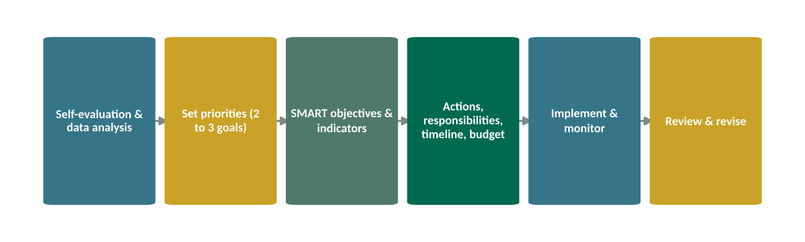
চিত্র ১০. বিদ্যালয় উন্নয়ন পরিকল্পনা প্রণয়নের ধাপসমূহ
PEDP II, PEDP3 ও PEDP4-এর আওতায় প্রতিটি সরকারি প্রাথমিক বিদ্যালয় বিদ্যালয় ব্যবস্থাপনা কমিটি (SMC), শিক্ষক ও জনসমাজকে সম্পৃক্ত করে SLIP অনুদানের সহায়তায় একটি বিদ্যালয় পর্যায়ের উন্নয়ন পরিকল্পনা (SLIP) প্রণয়ন করে। উপজেলা প্রাথমিক শিক্ষা পরিকল্পনা (UPEP) বিদ্যালয়গুলোর অগ্রাধিকার একত্র করে। মাধ্যমিক স্তরে বিভিন্ন প্রকল্প বিদ্যালয় উন্নয়ন ও কর্মদক্ষতাভিত্তিক অনুদানে অর্থায়ন করেছে। গবেষণায় দেখা যায়, SLIP জনসমাজের অংশগ্রহণ বাড়িয়েছে, তবে অর্থ প্রায়ই শিখনের অগ্রাধিকারের পরিবর্তে ভৌত সামগ্রীতে ব্যয় করা হয়েছে।
সর্বশেষ প্রাথমিক শিক্ষা কর্মসূচির আওতায় SLIP অনুদানের বর্তমান পরিমাণ ও পদ্ধতি নিশ্চিত হয়ে নিন।
কর্মপরিকল্পনার নমুনা ছক
| লক্ষ্য | কার্যক্রম | দায়িত্বপ্রাপ্ত | সময়সূচি | সম্পদ | সূচক | যাচাইয়ের উপায় |
|---|---|---|---|---|---|---|
| তৃতীয় শ্রেণির পঠন-সাবলীলতা বৃদ্ধি | প্রতিদিন ২০ মিনিটের নির্দেশিত পঠন | শ্রেণিশিক্ষক, প্রধান শিক্ষক | জানুয়ারি থেকে জুন | স্তরভিত্তিক পাঠ্যবই | ৮০% শিক্ষার্থী প্রতি মিনিটে ৪৫টি শব্দ পড়ে | সাবলীলতা অভীক্ষার রেকর্ড |
| অনুপস্থিতি হ্রাস | গৃহ পরিদর্শন ও অভিভাবকদের কাছে এসএমএস | সহকারী শিক্ষক, বিদ্যালয় ব্যবস্থাপনা কমিটি | মাসিক | মোবাইল ফোন | উপস্থিতি ৯০%-এর বেশি | হাজিরা খাতা |
| বিজ্ঞানে মেয়েদের অংশগ্রহণ বৃদ্ধি | নারী আদর্শ ব্যক্তিত্বদের সম্পৃক্ত করে বিজ্ঞান ক্লাব | বিজ্ঞান শিক্ষক | প্রথম টার্ম | ক্লাবের সরঞ্জাম | ক্লাব সদস্যদের ৫০% মেয়ে | ক্লাবের নিবন্ধন খাতা |
সারণি ১০. বিদ্যালয়ের কর্মপরিকল্পনার নমুনা ছক (দৃষ্টান্তমূলক)
২.৫ শিক্ষাব্যবস্থার সম্প্রসারণ ও উন্নয়নের কৌশল
| মাত্রা | অর্থ / নির্দেশক | কৌশলসমূহ | বাংলাদেশের দৃষ্টান্ত |
|---|---|---|---|
| প্রবেশাধিকার | ভর্তির সুযোগ (মোট ভর্তি হার, GER) | বিদ্যালয় নির্মাণ, বেতন মওকুফ, যাতায়াত সুবিধা, নমনীয় বিদ্যালয় শিক্ষা | নতুন সরকারি প্রাথমিক বিদ্যালয়, ২৬,০০০ বেসরকারি প্রাথমিক বিদ্যালয় জাতীয়করণ (২০১৩) |
| অংশগ্রহণ | নিয়মিত উপস্থিতি (নিট ভর্তি হার (NER), উপস্থিতির হার) | বিদ্যালয়ে খাদ্য কর্মসূচি, উপবৃত্তি, জনসমাজকে উদ্বুদ্ধকরণ | প্রাথমিক উপবৃত্তি (মোবাইল আর্থিক সেবার মাধ্যমে), বিদ্যালয়ে খাদ্য কর্মসূচি |
| সমাপ্তি (বর্ষ ও স্তর) | শেষ শ্রেণি পর্যন্ত টিকে থাকা; সমাপনের হার | নিরাময়মূলক সহায়তা, ঝরে পড়ার আগাম সতর্কতা, দ্বিতীয় সুযোগের শিক্ষা | রিচিং আউট-অব-স্কুল চিলড্রেন (ROSC); ব্র্যাক (BRAC) স্কুল |
| উত্তরণ (Promotion) | পরবর্তী শ্রেণিতে ওঠা (উত্তরণ, পুনরাবৃত্তির হার) | ধারাবাহিক মূল্যায়ন, নিরাময়মূলক শিক্ষাদান, পুনরাবৃত্তি হ্রাস | স্বয়ংক্রিয় উত্তরণ নিয়ে বিতর্ক; নিরাময়মূলক ক্লাস |
| স্তরান্তর (Transition) | এক স্তর থেকে অন্য স্তরে গমন (প্রাথমিক থেকে মাধ্যমিক) | মাধ্যমিক স্তরে উপবৃত্তি, বিদ্যালয়ের নৈকট্য, তথ্য সরবরাহ | মাধ্যমিক উপবৃত্তি (FSSAP, SESIP, HSP) |
| একীভূতকরণ (Inclusion) | প্রতিবন্ধী শিশু, ক্ষুদ্র নৃগোষ্ঠী ও দরিদ্রদের অংশগ্রহণ | একীভূত নীতি, সহায়ক উপকরণ, মাতৃভাষায় উপকরণ | প্রতিবন্ধিতা-একীভূত কর্মসূচি; পাঁচটি ক্ষুদ্র নৃগোষ্ঠীর ভাষায় পাঠ্যপুস্তক |
| জেন্ডার | সমতা ও সাম্য | মেয়েদের জন্য উপবৃত্তি, নারী শিক্ষক, নিরাপদ শৌচাগার, হয়রানি প্রতিরোধ | ভর্তিতে জেন্ডার সমতা অর্জিত; প্রাথমিকে নারী শিক্ষক নিয়োগে ৬০% কোটা |
| বৈচিত্র্য | সাংস্কৃতিক, ভাষাগত ও ধর্মীয় বৈচিত্র্যের প্রতি শ্রদ্ধা | বহুভাষিক শিক্ষা, সংস্কৃতি-সংবেদনশীল শিক্ষাক্রম | মাতৃভাষাভিত্তিক বহুভাষিক শিক্ষার পরীক্ষামূলক কর্মসূচি |
| মান | শিখনফল, প্রাসঙ্গিকতা | শিক্ষক উন্নয়ন, শিক্ষাক্রম সংস্কার, শিখনের জন্য মূল্যায়ন, শিক্ষণ নেতৃত্ব | ডিপ্লোমা ইন প্রাইমারি এডুকেশন (DPEd), বিষয়ভিত্তিক প্রশিক্ষণ, জাতীয় শিক্ষার্থী মূল্যায়ন (NSA) |
সারণি ১১. শিক্ষাব্যবস্থার সম্প্রসারণ ও উন্নয়নের কৌশল
উদ্ধৃত করার আগে ক্ষুদ্র নৃগোষ্ঠীর ভাষায় পাঠ্যপুস্তকের সংখ্যা, উপবৃত্তির বর্তমান পরিমাণ ও আওতা এবং নারী শিক্ষক কোটা যাচাই করে নিন।
বহুল ব্যবহৃত নির্দেশকসমূহ
মোট ভর্তি হার (GER) = (বয়স নির্বিশেষে কোনো স্তরে ভর্তিকৃত শিক্ষার্থী ÷ ওই স্তরের নির্ধারিত বয়সী জনসংখ্যা) × 100
নিট ভর্তি হার (NER) = (নির্ধারিত বয়সী ভর্তিকৃত শিশু ÷ নির্ধারিত বয়সী জনসংখ্যা) × 100
পঞ্চম শ্রেণি পর্যন্ত টিকে থাকার হার = (পঞ্চম শ্রেণিতে পৌঁছানো শিক্ষার্থী ÷ সংশ্লিষ্ট দলে (cohort) প্রথম শ্রেণিতে ভর্তি হওয়া শিক্ষার্থী) × 100
২.৬ বিভিন্ন কৌশলের সবলতা ও দুর্বলতা
| কৌশল | শক্তিশালী দিক | দুর্বলতা / ঝুঁকি |
|---|---|---|
| সরবরাহভিত্তিক সম্প্রসারণ (বিদ্যালয়, শিক্ষক) | ভৌত প্রবেশাধিকারের সমস্যা সমাধান করে | ব্যয়বহুল; সম্প্রসারণের তুলনায় মান পিছিয়ে পড়তে পারে |
| চাহিদাভিত্তিক প্রণোদনা (উপবৃত্তি, শর্তযুক্ত নগদ সহায়তা (CCT), খাদ্য কর্মসূচি) | দরিদ্রদের মধ্যে ভর্তি ও উপস্থিতি বাড়ায়; মেয়েদের অগ্রগতি | অপচয়, লক্ষ্যভুক্তকরণে ভুল; এককভাবে শিখনে সামান্য প্রভাব |
| বিকেন্দ্রীকরণ ও বিদ্যালয়ভিত্তিক ব্যবস্থাপনা | স্থানীয় মালিকানা, চাহিদার প্রতি সাড়াদান | প্রভাবশালীদের কুক্ষিগতকরণ (elite capture), অসম সক্ষমতা |
| জবাবদিহি ও অভীক্ষা | ফলাফল সম্পর্কে তথ্য; সুনির্দিষ্ট মনোযোগ | পরীক্ষাকেন্দ্রিক শিক্ষাদান, কোচিং, সংকুচিত শিক্ষাক্রম |
| শিক্ষকের পেশাগত উন্নয়ন | সরাসরি শিক্ষণকে লক্ষ্য করে | প্রায়ই একবারের এবং পরবর্তী অনুসরণহীন; চর্চায় স্থানান্তর দুর্বল |
| সরকারি-বেসরকারি অংশীদারিত্ব | দ্রুত শিক্ষাসেবার সম্প্রসারণ ঘটায় | ন্যায্যতা ও নিয়ন্ত্রণ নিয়ে উদ্বেগ |
| প্রযুক্তিভিত্তিক কৌশল | ব্যাপক বিস্তার, নমনীয়তা | ডিজিটাল বৈষম্য; উপযুক্ত শিক্ষণপদ্ধতি ও রক্ষণাবেক্ষণ প্রয়োজন |
সারণি ১২. নির্বাচিত কৌশলসমূহের সবলতা ও দুর্বলতা
প্রমাণ (যেমন, Glewwe & Muralidharan, 2016; Global Education Evidence Advisory Panel, 2020, 2023) ইঙ্গিত দেয় যে শিখনের জন্য সবচেয়ে ব্যয়-সাশ্রয়ী কৌশলগুলোর মধ্যে রয়েছে সঠিক স্তরে শিক্ষাদান (teaching at the right level), কাঠামোবদ্ধ শিক্ষণপদ্ধতি (structured pedagogy) (শিক্ষক সহায়িকা, উপকরণ ও কোচিং/নিবিড় সহায়তা), শিক্ষার প্রতিদান সম্পর্কে তথ্য প্রদান এবং বিদ্যালয়ে যাতায়াতের সময় হ্রাস। চাহিদাভিত্তিক প্রণোদনা মূলত প্রবেশাধিকার বৃদ্ধি করে।
সম্ভাব্য প্রশ্ন: "কৌশলের সংজ্ঞা দিন। নীতি ও কার্যকৌশলের সঙ্গে এর সম্পর্ক কী?" "একটি শিক্ষাপ্রতিষ্ঠানের আলোকে কৌশলগত পরিকল্পনার ধাপগুলো ব্যাখ্যা করুন।" "একটি মাধ্যমিক বিদ্যালয়ের জন্য একটি কৌশলগত পরিকল্পনা ও কর্মপরিকল্পনা প্রণয়ন করুন।" "প্রবেশাধিকার, জেন্ডার সমতা ও মান উন্নয়নে বাংলাদেশে ব্যবহৃত কৌশলগুলোর সমালোচনামূলক মূল্যায়ন করুন।"
ইউনিট ৩: নেতৃত্বের মূল দিকসমূহ
অধ্যায়ের সারসংক্ষেপ
নেতৃত্ব সম্পর্কিত বিভিন্ন ধারণা একে একটি বৈশিষ্ট্য (জন্মগত নেতা), একটি আচরণ (নেতারা যা করেন), একটি সম্পর্ক (নেতা ও অনুসারীদের মধ্যে), প্রভাব বিস্তারের একটি প্রক্রিয়া, একটি পদ (আনুষ্ঠানিক কর্তৃত্ব) অথবা একটি সংগঠনের বণ্টিত বৈশিষ্ট্য (বহু মানুষের মধ্যে ভাগ করা) হিসেবে বিবেচনা করে।
এই অধ্যায়ে আলোচিত বিষয়: নেতৃত্বের অর্থ ও সংজ্ঞা; নেতৃত্বের প্রকৃতি ও গুরুত্ব; নেতৃত্বের তত্ত্বসমূহ; শিক্ষায় নেতৃত্বের ধরন; নেতৃত্বের দক্ষতা ও নেতার গুণাবলি; নেতৃত্বের ধরনে জেন্ডারভিত্তিক পার্থক্য।
মূল পরিভাষা:
- নেতৃত্ব (Northouse, 2021): "এমন একটি প্রক্রিয়া, যার মাধ্যমে একজন ব্যক্তি একটি সাধারণ লক্ষ্য অর্জনের জন্য একদল ব্যক্তিকে প্রভাবিত করেন।" চারটি উপাদান: নেতৃত্ব একটি প্রক্রিয়া; এতে প্রভাব জড়িত; এটি দলের মধ্যে ঘটে; এবং এতে সাধারণ লক্ষ্য জড়িত।
- নেতৃত্ব (Stogdill, 1950): "লক্ষ্য নির্ধারণ ও লক্ষ্য অর্জনের দিকে একটি সংগঠিত দলের কার্যক্রমকে প্রভাবিত করার প্রক্রিয়া।"
- শিক্ষা নেতৃত্ব (Bush, 2020): নেতৃত্ব হলো "প্রভাব বিস্তারের একটি প্রক্রিয়া, যা কাঙ্ক্ষিত উদ্দেশ্য অর্জনের দিকে নিয়ে যায়"; এটি ব্যক্তিগত ও পেশাগত মূল্যবোধের ওপর প্রতিষ্ঠিত এবং বিদ্যালয়ের জন্য একটি সুস্পষ্ট রূপকল্প হিসেবে প্রকাশিত।
শিক্ষাক্রমে যা বলা হয়েছেইউনিট ৩: নেতৃত্বের মূল দিকসমূহ · ৮ সংযোগ ঘণ্টা
এই ইউনিট শেষে শিক্ষার্থীরা যা পারবে
- নেতৃত্বের মূল দিকসমূহ বর্ণনা করা
- নেতৃত্বের তত্ত্বসমূহ ব্যাখ্যা করা
- শিক্ষায় নেতৃত্বের ধরনসমূহ চিহ্নিত করা
- নেতৃত্বের দক্ষতা ও গুণাবলি প্রদর্শন করা
- নেতৃত্বের ধরনে জেন্ডারভিত্তিক পার্থক্য তুলনা করা
- নেতৃত্বের অর্থ, সংজ্ঞা ও বিভিন্ন ধারণা
- নেতৃত্বের প্রকৃতি ও গুরুত্ব
- নেতৃত্বের তত্ত্ব ও ধরন
- নেতৃত্বের দক্ষতা ও নেতার গুণাবলি
- নেতৃত্বের ধরনে জেন্ডারভিত্তিক পার্থক্য
৩.১ নেতৃত্বের অর্থ ও সংজ্ঞা
নেতৃত্ব (leadership) (Northouse, 2021): "এমন একটি প্রক্রিয়া, যার মাধ্যমে একজন ব্যক্তি একটি সাধারণ লক্ষ্য অর্জনের জন্য একদল ব্যক্তিকে প্রভাবিত করেন।" চারটি উপাদান: নেতৃত্ব একটি প্রক্রিয়া; এতে প্রভাব জড়িত; এটি দলের মধ্যে ঘটে; এবং এতে সাধারণ লক্ষ্য জড়িত।
নেতৃত্ব (Stogdill, 1950): "লক্ষ্য নির্ধারণ ও লক্ষ্য অর্জনের দিকে একটি সংগঠিত দলের কার্যক্রমকে প্রভাবিত করার প্রক্রিয়া।"
শিক্ষা নেতৃত্ব (educational leadership) (Bush, 2020): নেতৃত্ব হলো "প্রভাব বিস্তারের একটি প্রক্রিয়া, যা কাঙ্ক্ষিত উদ্দেশ্য অর্জনের দিকে নিয়ে যায়"; এটি ব্যক্তিগত ও পেশাগত মূল্যবোধের ওপর প্রতিষ্ঠিত এবং বিদ্যালয়ের জন্য একটি সুস্পষ্ট রূপকল্প হিসেবে প্রকাশিত।
নেতৃত্ব সম্পর্কিত বিভিন্ন ধারণা একে একটি বৈশিষ্ট্য (trait) (জন্মগত নেতা), একটি আচরণ (behaviour) (নেতারা যা করেন), একটি সম্পর্ক (relationship) (নেতা ও অনুসারীদের মধ্যে), প্রভাব বিস্তারের একটি প্রক্রিয়া (process), একটি পদ (position) (আনুষ্ঠানিক কর্তৃত্ব) অথবা একটি সংগঠনের বণ্টিত বৈশিষ্ট্য (distributed property) (বহু মানুষের মধ্যে ভাগ করা) হিসেবে বিবেচনা করে।
নেতৃত্ব ও ব্যবস্থাপনা
| ব্যবস্থাপনা | নেতৃত্ব |
|---|---|
| পরিকল্পনা ও বাজেট প্রণয়ন | দিকনির্দেশনা নির্ধারণ (রূপকল্প) |
| সংগঠন ও জনবল নিয়োগ | মানুষকে একই লক্ষ্যে সমন্বিত করা |
| নিয়ন্ত্রণ ও সমস্যা সমাধান | প্রেষণা দান ও অনুপ্রাণিত করা |
| শৃঙ্খলা ও ধারাবাহিকতা সৃষ্টি করে | পরিবর্তন ও গতিশীলতা সৃষ্টি করে |
| "কাজগুলো সঠিকভাবে করা" | "সঠিক কাজগুলো করা" |
সারণি ১৩. নেতৃত্ব ও ব্যবস্থাপনার তুলনা (Kotter, 1990; Bennis & Nanus, 1985)
টনি বুশ (Bush, 2020) যুক্তি দেন যে কার্যকর শিক্ষাপ্রতিষ্ঠানের জন্য উভয়ই প্রয়োজন: ব্যবস্থাপনাহীন নেতৃত্বে বাস্তবায়নের অভাব থাকে; নেতৃত্বহীন ব্যবস্থাপনায় দিকনির্দেশনার অভাব থাকে। ল্যারি কিউবান (Cuban, 1988) নেতৃত্বকে পরিবর্তনের সঙ্গে এবং ব্যবস্থাপনাকে রক্ষণাবেক্ষণের সঙ্গে যুক্ত করেছেন।
৩.২ নেতৃত্বের প্রকৃতি ও গুরুত্ব
প্রকৃতি: নেতৃত্ব সম্পর্কভিত্তিক, প্রেক্ষাপটনির্ভর, মূল্যবোধসম্পৃক্ত, উদ্দেশ্যমূলক এবং আনুষ্ঠানিক ও অনানুষ্ঠানিক উভয়ই; কেবল অধ্যক্ষ বা প্রধান শিক্ষক নন, যে কেউ নেতৃত্ব দিতে পারেন।
শিক্ষায় গুরুত্ব: লিথউড ও সহযোগীরা (Leithwood et al., 2008) এই সিদ্ধান্তে পৌঁছান যে "শিক্ষার্থীর শিখনের ওপর প্রভাবের ক্ষেত্রে বিদ্যালয় নেতৃত্বের স্থান শ্রেণিকক্ষে শিক্ষাদানের ঠিক পরেই"। রবিনসন, হোহেপা ও লয়েড (Robinson, Hohepa and Lloyd, 2009) দেখতে পান যে তাঁদের অধ্যয়নকৃত নেতৃত্বের মাত্রাগুলোর মধ্যে শিক্ষকের শিখন ও উন্নয়নকে উৎসাহিত করা ও তাতে অংশগ্রহণ সবচেয়ে বেশি প্রভাব ফেলে (প্রভাবের আকার (effect size) প্রায় 0.84), এরপর রয়েছে শিক্ষাদান ও শিক্ষাক্রমের পরিকল্পনা, সমন্বয় ও মূল্যায়ন।
| মাত্রা | আনুমানিক প্রভাবের আকার |
|---|---|
| লক্ষ্য ও প্রত্যাশা নির্ধারণ | 0.42 |
| কৌশলগত সম্পদ সংস্থান | 0.31 |
| শিক্ষাদান ও শিক্ষাক্রমের পরিকল্পনা, সমন্বয় ও মূল্যায়ন | 0.42 |
| শিক্ষকের শিখন ও উন্নয়নকে উৎসাহিত করা ও তাতে অংশগ্রহণ | 0.84 |
| সুশৃঙ্খল ও সহায়ক পরিবেশ নিশ্চিত করা | 0.27 |
সারণি ১৪. শিক্ষার্থীকেন্দ্রিক নেতৃত্বের পাঁচটি মাত্রা (Robinson et al., 2009)
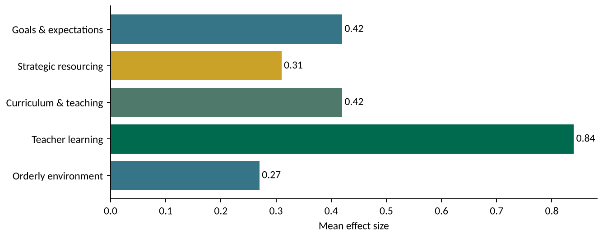
চিত্র ১১. শিক্ষার্থীর ফলাফলের ওপর নেতৃত্বের মাত্রাসমূহের প্রভাবের আকার (Robinson et al., 2009)
৩.৩ নেতৃত্বের তত্ত্বসমূহ
বৈশিষ্ট্য তত্ত্ব (Trait theories)
প্রাথমিক "মহামানব" (great man) তত্ত্বগুলো ধরে নিয়েছিল যে নেতারা জন্মগতভাবেই নেতা। স্টগডিলের (Stogdill) পর্যালোচনাগুলো (1948, 1974) নেতৃত্বের সঙ্গে সম্পর্কিত বৈশিষ্ট্য (বুদ্ধি, আত্মবিশ্বাস, দৃঢ়সংকল্প, সততা, সামাজিকতা) খুঁজে পায়, তবে দেখায় যে কেবল বৈশিষ্ট্য দিয়ে বিভিন্ন পরিস্থিতিতে নেতৃত্বের পূর্বাভাস দেওয়া যায় না। পরবর্তী গবেষণা ব্যক্তিত্বের পাঁচটি প্রধান উপাদানকে (Big Five) নেতৃত্বের উদ্ভব ও কার্যকারিতার সঙ্গে যুক্ত করে: বহির্মুখিতা সবচেয়ে শক্তিশালী, এরপর বিবেকবোধ ও উন্মুক্ততা (Judge et al., 2002)।
দক্ষতা উপাগম (Skills approach)
রবার্ট কাৎজ (Katz, 1955) তিনটি দক্ষতা চিহ্নিত করেন, যাদের গুরুত্ব ব্যবস্থাপনার স্তরভেদে ভিন্ন হয়:
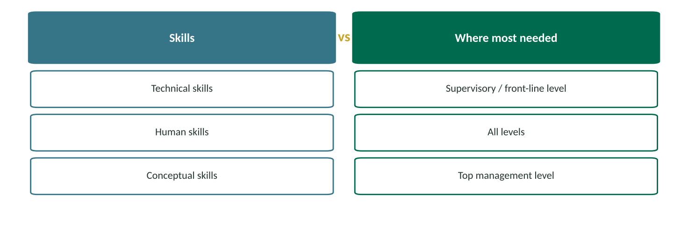
চিত্র ১২. কাৎজের (Katz, 1955) ত্রি-দক্ষতা উপাগম
মামফোর্ড ও সহযোগীরা (Mumford et al., 2000) যোগ্যতা (সমস্যা সমাধান, সামাজিক বিচারবোধ, জ্ঞান), ব্যক্তিগত বৈশিষ্ট্য ও কর্মজীবনের অভিজ্ঞতাসংবলিত একটি দক্ষতা মডেল প্রস্তাব করেন।
আচরণগত তত্ত্ব
ওহাইও স্টেট গবেষণা (Ohio State studies): দুটি মাত্রা, কাঠামো প্রবর্তন (initiating structure) (কাজ) এবং বিবেচনা (consideration) (সম্পর্ক)।
মিশিগান বিশ্ববিদ্যালয় গবেষণা (University of Michigan studies): উৎপাদনমুখিতা বনাম কর্মীমুখিতা।
ব্লেক ও মাউটনের ব্যবস্থাপনা (নেতৃত্ব) গ্রিড (Blake and Mouton's Managerial Grid, 1964): উৎপাদনের প্রতি মনোযোগ বনাম মানুষের প্রতি মনোযোগ থেকে পাঁচটি ধরন পাওয়া যায়: নিঃস্ব (impoverished) (1,1), কান্ট্রি ক্লাব (country club) (1,9), কর্তৃত্ব-আনুগত্য (authority-compliance) (9,1), মধ্যপন্থী (middle-of-the-road) (5,5) এবং দলীয় ব্যবস্থাপনা (team management) (9,9)।
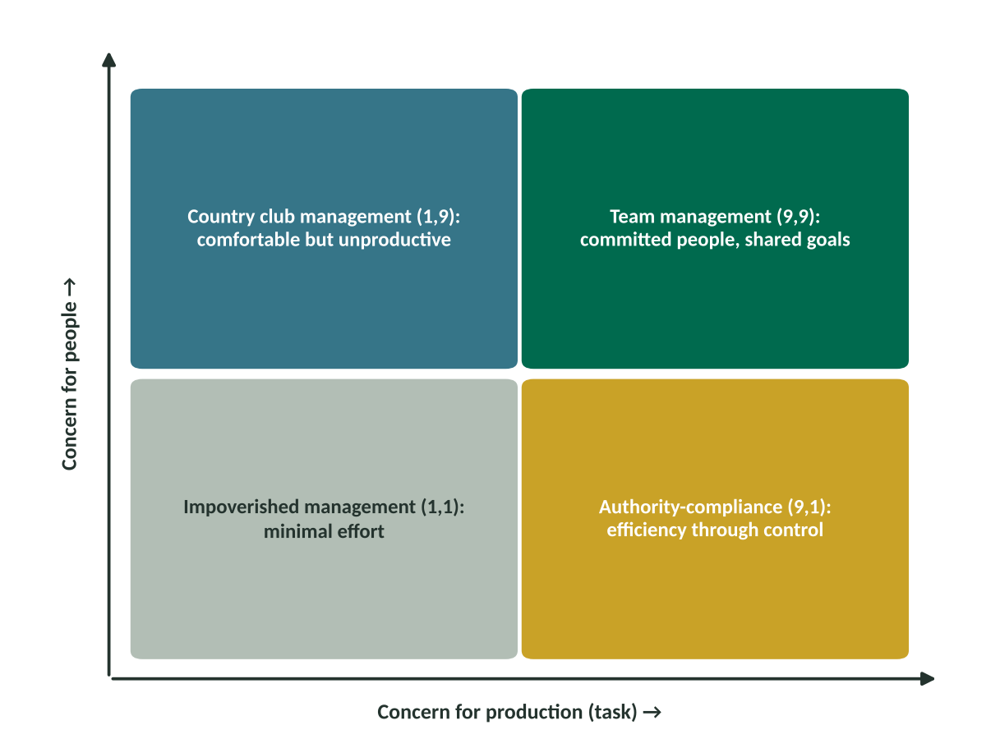
চিত্র ১৩. ব্লেক ও মাউটনের ব্যবস্থাপনা গ্রিড (সরলীকৃত)
লিউইন, লিপিট ও হোয়াইট (Lewin, Lippitt and White, 1939): স্বৈরতান্ত্রিক, গণতান্ত্রিক ও অবাধ (laissez-faire) ধরন; গণতান্ত্রিক নেতৃত্ব উন্নততর মনোবল ও মৌলিকতা সৃষ্টি করেছিল।
পরিস্থিতিনির্ভর (contingency) ও পরিস্থিতিগত (situational) তত্ত্ব
ফিডলারের পরিস্থিতিনির্ভর তত্ত্ব (Fiedler's contingency theory, 1967): কার্যকারিতা নির্ভর করে নেতার ধরন (সবচেয়ে কম পছন্দের সহকর্মী (Least Preferred Co-worker) স্কেল দ্বারা পরিমাপিত: কাজমুখী বা সম্পর্কমুখী প্রেরিত) এবং পরিস্থিতির অনুকূলতার (নেতা-সদস্য সম্পর্ক, কাজের কাঠামো, পদের ক্ষমতা) মধ্যকার সামঞ্জস্যের ওপর।
হার্সি ও ব্ল্যানচার্ডের পরিস্থিতিগত নেতৃত্ব (Situational Leadership): নেতারা অনুসারীদের বিকাশের স্তর অনুযায়ী নির্দেশনামূলক ও সহায়তামূলক আচরণ খাপ খাইয়ে নেন।
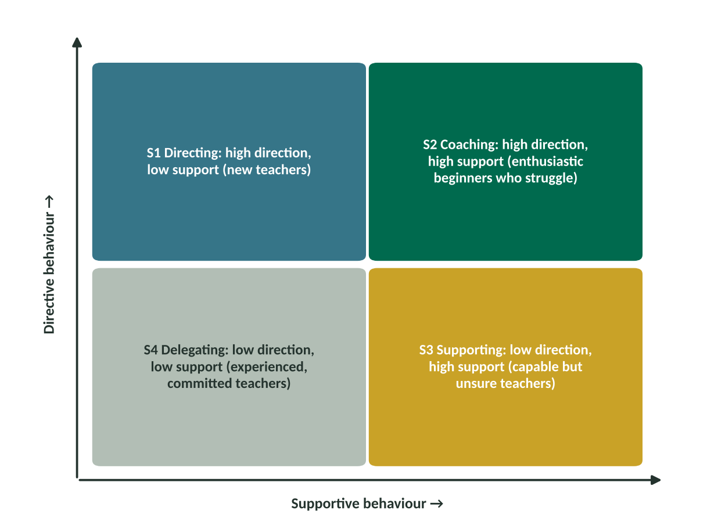
চিত্র ১৪. হার্সি ও ব্ল্যানচার্ডের পরিস্থিতিগত নেতৃত্বের ধরনসমূহ
পথ-লক্ষ্য তত্ত্ব (Path-goal theory) (House, 1971): নেতা লক্ষ্যে পৌঁছানোর পথ স্পষ্ট করেন ও বাধা দূর করেন, এবং অনুসারী ও কাজের ধরন অনুযায়ী নির্দেশনামূলক, সহায়তামূলক, অংশগ্রহণমূলক বা অর্জনমুখী আচরণ বেছে নেন।
নেতা-সদস্য বিনিময় (LMX) তত্ত্ব: দ্বিপাক্ষিক সম্পর্কের গুণমান (অন্তর্দল ও বহির্দল) ফলাফলকে প্রভাবিত করে।
রূপান্তরমূলক ও লেনদেনমূলক নেতৃত্ব
জেমস ম্যাকগ্রেগর বার্নস (Burns, 1978) লেনদেনমূলক (transactional) নেতৃত্ব (কর্মদক্ষতার বিনিময়ে পুরস্কার) এবং রূপান্তরকারী (transforming) নেতৃত্বের (অনুসারীদের প্রেষণা ও নৈতিকতার উচ্চতর স্তরে উন্নীত করা) মধ্যে পার্থক্য করেন। বার্নার্ড বাস (Bass, 1985) রূপান্তরমূলক নেতৃত্বের "চারটি I"-সহ পূর্ণ পরিসর নেতৃত্ব মডেল (Full Range Leadership Model) গড়ে তোলেন:

চিত্র ১৫. রূপান্তরমূলক নেতৃত্বের ক্ষেত্রে বাস-এর চারটি I
লিথউড ও জান্টজি (Leithwood and Jantzi) রূপান্তরমূলক নেতৃত্বকে বিদ্যালয়ের উপযোগী করে গড়ে তোলেন: দিকনির্দেশনা নির্ধারণ, মানুষের বিকাশ, সংগঠনের পুনর্বিন্যাস এবং শিক্ষণ কর্মসূচির ব্যবস্থাপনা।
শিক্ষাক্ষেত্রের নিজস্ব নেতৃত্ব মডেল
| মডেল | প্রধান লেখকবৃন্দ | মূল ধারণা |
|---|---|---|
| শিক্ষণ নেতৃত্ব (Instructional leadership) | Hallinger & Murphy (1985) | প্রধান শিক্ষক শিখন-শেখানোর ওপর মনোযোগ দেন: বিদ্যালয়ের অভিলক্ষ্য নির্ধারণ, শিক্ষণ কর্মসূচির ব্যবস্থাপনা, ইতিবাচক শিখন পরিবেশের প্রসার |
| শিখনের জন্য নেতৃত্ব (Leadership for learning) | MacBeath & Dempster (2009); Townsend & MacBeath (2011) | পাঁচটি নীতি: শিখনে মনোযোগ, শিখনের অনুকূল অবস্থা, সংলাপ, যৌথ নেতৃত্ব, যৌথ জবাবদিহি |
| বণ্টিত নেতৃত্ব (Distributed leadership) | Spillane (2006); Gronn (2002); Harris (2008) | নেতৃত্ব নেতা, অনুসারী ও পরিস্থিতির মধ্যে বিস্তৃত; পারস্পরিক মিথস্ক্রিয়া থেকে চর্চা উদ্ভূত হয় |
| শিক্ষক নেতৃত্ব (Teacher leadership) | York-Barr & Duke (2004) | শিক্ষকেরা শ্রেণিকক্ষের বাইরেও নেতৃত্ব দেন: মেন্টরিং, শিক্ষাক্রম, পেশাগত সম্প্রদায় |
| নৈতিক নেতৃত্ব (Moral leadership) | Sergiovanni (1992) | আমলাতান্ত্রিক কর্তৃত্বের পরিবর্তে মূল্যবোধ, উদ্দেশ্য ও নৈতিক কর্তৃত্বভিত্তিক নেতৃত্ব |
| সেবক নেতৃত্ব (Servant leadership) | Greenleaf (1970) | নেতা সর্বাগ্রে একজন সেবক; অন্যের বিকাশে মনোযোগ দেন |
| প্রকৃত নেতৃত্ব (Authentic leadership) | Avolio & Gardner (2005) | আত্মসচেতনতা, সম্পর্কের স্বচ্ছতা, ভারসাম্যপূর্ণ বিচার-বিশ্লেষণ, অন্তর্নিহিত নৈতিক দৃষ্টিভঙ্গি |
| ব্যবস্থা নেতৃত্ব (System leadership) | Fullan; Hopkins | নেতারা বৃহত্তর ব্যবস্থার উন্নয়নে নিজ বিদ্যালয়ের বাইরেও কাজ করেন |
| পরিস্থিতিনির্ভর / অভিযোজনমূলক নেতৃত্ব (Contingent / adaptive leadership) | Heifetz (1994) | কারিগরি সমস্যা এবং মূল্যবোধ ও বিশ্বাসে পরিবর্তন দাবি করে এমন অভিযোজনমূলক চ্যালেঞ্জের মধ্যে পার্থক্য করুন |
সারণি ১৫. শিক্ষা নেতৃত্বের মডেলসমূহ
বাংলাদেশের মাধ্যমিক বিদ্যালয় নিয়ে সালাহউদ্দিনের (Salahuddin) গবেষণায় (2011, 2016) দেখা যায় যে নেতৃত্ব ঐতিহ্যগতভাবে পদভিত্তিক ও স্তরক্রমিক, এবং প্রধান শিক্ষকেরা গভর্নিং বডি, রাজনৈতিক চাপ ও আমলাতান্ত্রিক বিধিনিষেধে সীমাবদ্ধ; তবে গবেষণাগুলো এমন অধ্যক্ষদেরও চিহ্নিত করেছে, যাঁরা পরিবর্তন আনতে বণ্টিত ও সহযোগিতামূলক চর্চা গড়ে তুলেছেন। এই গবেষণাগুলো পাঠ্যসূচিতে সুপারিশকৃত এবং স্থানীয় প্রমাণ হিসেবে উপযোগী।
৩.৪ শিক্ষায় নেতৃত্বের ধরন
| ধরন | বিবরণ | কখন উপযোগী | ঝুঁকি |
|---|---|---|---|
| স্বৈরতান্ত্রিক / নির্দেশনামূলক | নেতা সিদ্ধান্ত নেন ও নির্দেশ দেন | সংকট (যেমন, বন্যা, নিরাপত্তা), নতুন কর্মী | নিম্ন মনোবল, পরনির্ভরতা |
| গণতান্ত্রিক / অংশগ্রহণমূলক | কর্মীদের অংশগ্রহণে সিদ্ধান্ত | শিক্ষাক্রম পরিকল্পনা, বিদ্যালয় উন্নয়ন পরিকল্পনা (SIP) | ধীরগতির সিদ্ধান্ত |
| অবাধ (Laissez-faire) | ন্যূনতম হস্তক্ষেপ | অত্যন্ত দক্ষ, স্বপ্রণোদিত দল | লক্ষ্যহীনতা, দিকনির্দেশনার অভাব |
| লেনদেনমূলক | কর্মদক্ষতার জন্য পুরস্কার ও শাস্তি | নিয়মিত কাজে আনুগত্য | সীমিত উদ্ভাবন |
| রূপান্তরমূলক | রূপকল্প, অনুপ্রেরণা, বিকাশ | সংস্কার ও পরিবর্তন | ক্যারিশমার ওপর নির্ভরশীলতায় পরিণত হতে পারে |
| শিক্ষণ | শিক্ষাদান ও শিখনে মনোযোগ | শিখনফলের উন্নয়ন | মাত্রাতিরিক্ত হলে প্রশাসনিক কাজ অবহেলিত হয় |
| বণ্টিত | বহুজনের মধ্যে ভাগ করা নেতৃত্ব | জটিল, বৃহত্তর প্রতিষ্ঠান | দায়িত্বের অস্পষ্টতা |
| সেবক | অন্যের সেবা ও বিকাশ | সংস্কৃতি গড়ে তোলা | দুর্বল হিসেবে প্রতীয়মান হতে পারে |
সারণি ১৬. নেতৃত্বের ধরন এবং শিক্ষাক্ষেত্রে তাদের ব্যবহার
ড্যানিয়েল গোলম্যান (Goleman, 2000) আবেগীয় বুদ্ধিভিত্তিক ছয়টি ধরন চিহ্নিত করেন: বলপ্রয়োগমূলক, কর্তৃত্বপূর্ণ (দূরদর্শী), সম্পর্কনির্ভর, গণতান্ত্রিক, গতি-নির্ধারক এবং কোচিংমূলক; তিনি দেখতে পান যে সবচেয়ে কার্যকর নেতারা নমনীয়ভাবে এগুলোর মধ্যে পরিবর্তন করেন।
৩.৫ নেতৃত্বের দক্ষতা ও নেতার গুণাবলি
| দক্ষতা | গুণাবলি |
|---|---|
| রূপকল্প নির্ধারণ ও কৌশলগত চিন্তন | সততা ও ন্যায়নিষ্ঠা |
| যোগাযোগ ও সক্রিয় শ্রবণ | সহমর্মিতা ও আবেগীয় বুদ্ধি |
| সিদ্ধান্ত গ্রহণ ও সমস্যা সমাধান | বিনয়ের সঙ্গে আত্মবিশ্বাস |
| দল গঠন ও দায়িত্ব অর্পণ | ন্যায্যতা ও অন্তর্ভুক্তিমূলক মনোভাব |
| শিক্ষণ বিষয়ক জ্ঞান ও তত্ত্বাবধান | সহনশীলতা ও অধ্যবসায় |
| দ্বন্দ্ব ব্যবস্থাপনা ও আলোচনা-সমঝোতা | জবাবদিহি ও দায়িত্বশীলতা |
| উপাত্তের ব্যবহার ও মূল্যায়ন | শেখা ও পরিবর্তনের প্রতি উন্মুক্ততা |
| সম্পদ ও আর্থিক ব্যবস্থাপনা | শিক্ষার্থীদের প্রতি অঙ্গীকার |
সারণি ১৭. নেতৃত্বের মূল দক্ষতা ও গুণাবলি
৩.৬ নেতৃত্বের ধরনে জেন্ডারভিত্তিক পার্থক্য
জেন্ডার ও নেতৃত্ব বিষয়ক গবেষণা পরীক্ষা করে নারী ও পুরুষ ভিন্নভাবে নেতৃত্ব দেন কি না এবং ঊর্ধ্বতন পদে নারীর প্রতিনিধিত্ব কেন কম।
ঈগলি ও জনসন (Eagly and Johnson, 1990)-এর মেটা-বিশ্লেষণ: নারীরা তুলনামূলকভাবে বেশি গণতান্ত্রিক, অংশগ্রহণমূলক ধরন এবং পুরুষেরা বেশি স্বৈরতান্ত্রিক, নির্দেশনামূলক ধরন গ্রহণের প্রবণতা দেখান; সাংগঠনিক পরিবেশে কাজমুখিতা বনাম আন্তঃব্যক্তিক মুখিতার পার্থক্য ছিল সামান্য।
ঈগলি, জোহানেসেন-শ্মিট ও ভ্যান এনজেন (Eagly, Johannesen-Schmidt and van Engen, 2003): নারীরা কিছুটা বেশি রূপান্তরমূলক ছিলেন এবং শর্তসাপেক্ষ পুরস্কার বেশি ব্যবহার করতেন, যার উভয়ই কার্যকারিতার সঙ্গে সম্পর্কিত।
ভূমিকা-সামঞ্জস্য তত্ত্ব (Role congruity theory) (Eagly & Karau, 2002): নেতৃত্বের ভূমিকাকে পুরুষালি হিসেবে গৎবাঁধাভাবে দেখা হয় বলে কুসংস্কার তৈরি হয়, ফলে নারী নেতাদের তুলনামূলক কম অনুকূলভাবে মূল্যায়ন করা হয়।
কাচের ছাদ (Glass ceiling) এবং গোলকধাঁধা (labyrinth) রূপক (Eagly & Carli, 2007): নারীরা শীর্ষে কেবল একটি বাধা নয়, বরং একাধিক বাধার (পারিবারিক দায়িত্ব, নেটওয়ার্ক, গৎবাঁধা ধারণা) মুখোমুখি হন; কাচের খাদ (glass cliff) (Ryan & Haslam, 2005) ঝুঁকিপূর্ণ নেতৃত্বের পদে নারীদের নিয়োগকে বর্ণনা করে।
বাংলাদেশে নারী নিয়োগ কোটার কারণে সরকারি প্রাথমিক শিক্ষকদের সংখ্যাগরিষ্ঠই নারী, তবু প্রধান শিক্ষক, শিক্ষা কর্মকর্তা, কলেজের অধ্যক্ষ ও বিশ্ববিদ্যালয়ের উপাচার্য পদে তাঁদের প্রতিনিধিত্ব কম। বাধাগুলোর মধ্যে রয়েছে চলাফেরা সংক্রান্ত সামাজিক রীতিনীতি, পারিবারিক দায়িত্ব, বদলি-পদায়ন, যৌন হয়রানি এবং পুরুষপ্রধান নেটওয়ার্ক। ইতিবাচক বৈষম্যমূলক পদক্ষেপ (affirmative action), মেন্টরিং, নমনীয় পদায়ন এবং নেতৃত্ব প্রশিক্ষণ (যেমন, জাতীয় শিক্ষা ব্যবস্থাপনা একাডেমি (NAEM)-এর মাধ্যমে) এই ব্যবধান দূর করার কৌশল।
সারবাদ (essentialism) পরিহার করুন: প্রতিটি জেন্ডারের অভ্যন্তরীণ ভিন্নতা দুই জেন্ডারের মধ্যকার পার্থক্যের চেয়ে বেশি, এবং নেতৃত্বের ধরন অনেকাংশে প্রেক্ষাপট, সংস্কৃতি ও সাংগঠনিক প্রত্যাশার ওপর নির্ভর করে। আন্তঃছেদিতা (intersectionality) (শ্রেণি, নৃগোষ্ঠী, প্রতিবন্ধিতা ও অবস্থানের সঙ্গে জেন্ডার) গুরুত্বপূর্ণ।
সম্ভাব্য প্রশ্ন: "নেতৃত্বের সংজ্ঞা দিন। নেতৃত্ব ও ব্যবস্থাপনার মধ্যে পার্থক্য করুন।" "নেতৃত্বের বৈশিষ্ট্য, আচরণগত ও পরিস্থিতিগত তত্ত্ব ব্যাখ্যা করুন।" "রূপান্তরমূলক নেতৃত্ব কী? বাংলাদেশের বিদ্যালয়প্রধানদের জন্য এর প্রাসঙ্গিকতা আলোচনা করুন।" "শিক্ষণ নেতৃত্ব ও বণ্টিত নেতৃত্বের তুলনা করুন।" "নেতৃত্বের ধরনে কি জেন্ডারভিত্তিক পার্থক্য আছে? গবেষণালব্ধ প্রমাণসহ আলোচনা করুন।"
ইউনিট ৪: শিক্ষা নেতৃত্ব গঠন
অধ্যায়ের সারসংক্ষেপ
সমসাময়িক গবেষণা ইঙ্গিত দেয় যে নেতৃত্ব আংশিকভাবে সহজাত প্রবণতানির্ভর, তবে মূলত অভিজ্ঞতা, শিখন ও প্রতিফলনের মাধ্যমে বিকশিত হয়। পিটার গ্রন (Gronn, 1999) শিক্ষা নেতৃত্ব গঠনকে চারটি পর্যায়ের একটি কর্মজীবন হিসেবে বর্ণনা করেন: গঠন (পরিবার, বিদ্যালয় ও সমাজে প্রারম্ভিক সামাজিকীকরণ, যা মূল্যবোধ ও আত্মবিশ্বাসকে রূপ দেয়), অভিগমন (নেতৃত্বের জন্য প্রস্তুতি ও প্রার্থিতা), পদে অধিষ্ঠান (পদে থেকে কাজের মাধ্যমে…
এই অধ্যায়ে আলোচিত বিষয়: নেতা কি জন্মগত না তৈরি হন?; একীভূত ও কার্যকর নেতার ব্যক্তিত্বের বৈশিষ্ট্য; নেতৃত্বে দক্ষতা উন্নয়ন; প্রেষণা, আত্মসচেতনতা, আত্মশৃঙ্খলা, শিক্ষা ও অভিজ্ঞতার মাধ্যমে নেতৃত্ব বিকাশ; নেতৃত্বের দক্ষতা গঠনমূলক অনুশীলন।
শিক্ষাক্রমে যা বলা হয়েছেইউনিট ৪: শিক্ষা নেতৃত্ব গঠন · ৬ সংযোগ ঘণ্টা
এই ইউনিট শেষে শিক্ষার্থীরা যা পারবে
- একজন কার্যকর নেতার ব্যক্তিত্বের বৈশিষ্ট্য চিহ্নিত করা
- নেতৃত্বে দক্ষতা উন্নয়নের গুরুত্ব মূল্যায়ন করা
- নেতা হিসেবে ভূমিকা পালন করা
- একীভূত ও কার্যকর নেতার ব্যক্তিত্বের বৈশিষ্ট্য
- নেতৃত্বে দক্ষতা উন্নয়ন
- প্রেষণা, আত্মসচেতনতা, আত্মশৃঙ্খলা, শিক্ষা ও প্রশিক্ষণ,
- নেতৃত্বের দক্ষতা গঠনমূলক অনুশীলন
৪.১ নেতা কি জন্মগত না তৈরি হন?
সমসাময়িক গবেষণা ইঙ্গিত দেয় যে নেতৃত্ব আংশিকভাবে সহজাত প্রবণতানির্ভর, তবে মূলত অভিজ্ঞতা, শিখন ও প্রতিফলনের মাধ্যমে বিকশিত হয়। পিটার গ্রন (Gronn, 1999) শিক্ষা নেতৃত্ব গঠনকে (making of educational leaders) চারটি পর্যায়ের একটি কর্মজীবন হিসেবে বর্ণনা করেন: গঠন (formation) (পরিবার, বিদ্যালয় ও সমাজে প্রারম্ভিক সামাজিকীকরণ, যা মূল্যবোধ ও আত্মবিশ্বাসকে রূপ দেয়), অভিগমন (accession) (নেতৃত্বের জন্য প্রস্তুতি ও প্রার্থিতা), পদে অধিষ্ঠান (incumbency) (পদে থেকে কাজের মাধ্যমে শেখা), এবং পদত্যাগ/বিযুক্তি (divestiture) (নেতৃত্ব ছেড়ে দেওয়া)।

চিত্র ১৬. নেতা বিকাশে গ্রনের (Gronn, 1999) কর্মজীবন মডেল
৪.২ একীভূত ও কার্যকর নেতার ব্যক্তিত্বের বৈশিষ্ট্য
কার্যকর নেতারা সাধারণত উচ্চ বিবেকবোধ, আবেগীয় স্থিতিশীলতা, উন্মুক্ততা, প্রেক্ষাপট-উপযোগী বহির্মুখিতা এবং প্রবল আবেগীয় বুদ্ধি (emotional intelligence) (EI) প্রদর্শন করেন।
| উপাদান | সংজ্ঞা | বৈশিষ্ট্যসূচক লক্ষণ |
|---|---|---|
| আত্মসচেতনতা | নিজের আবেগ, সবলতা ও সীমাবদ্ধতা উপলব্ধি করা | আত্মবিশ্বাস, বাস্তবসম্মত আত্মমূল্যায়ন |
| আত্মনিয়ন্ত্রণ | তাৎক্ষণিক আবেগ ও মেজাজ নিয়ন্ত্রণ | বিশ্বস্ততা, অনিশ্চয়তার সঙ্গে স্বস্তিবোধ |
| প্রেষণা | অর্থ বা মর্যাদার ঊর্ধ্বে কাজের প্রতি অনুরাগ | আশাবাদ, অঙ্গীকার |
| সহমর্মিতা | অন্যের আবেগ উপলব্ধি করা | আন্তঃসাংস্কৃতিক সংবেদনশীলতা, সেবা |
| সামাজিক দক্ষতা | সম্পর্ক ব্যবস্থাপনা ও নেটওয়ার্ক গড়ে তোলা | প্ররোচনাশক্তি, দলীয় নেতৃত্ব |
সারণি ১৮. গোলম্যানের (Goleman, 1998) আবেগীয় বুদ্ধির উপাদানসমূহ
একীভূত নেতারা (inclusive leaders) এমন পরিবেশ সৃষ্টি করেন, যেখানে সকল সদস্য নিজেদের মূল্যবান মনে করেন এবং অবদান রাখতে সক্ষম হন। বুর্ক ও ডিলন (Bourke and Dillon, 2016) ছয়টি স্বাতন্ত্র্যসূচক বৈশিষ্ট্য চিহ্নিত করেন: অঙ্গীকার (মূল্যবোধ হিসেবে বৈচিত্র্যের প্রতি), সাহস (প্রচলিত অবস্থাকে চ্যালেঞ্জ করার), পক্ষপাত সম্পর্কে সচেতনতা, কৌতূহল, সাংস্কৃতিক বুদ্ধি এবং সহযোগিতা। বিদ্যালয়ে একীভূত নেতৃত্ব মানে একীভূতকরণের জন্য নেতৃত্বও: এমন সংস্কৃতি, নীতি ও চর্চা গড়ে তোলা, যা প্রতিবন্ধী শিক্ষার্থী, ক্ষুদ্র নৃগোষ্ঠী ও অন্যান্য প্রান্তিক গোষ্ঠীকে স্বাগত জানায় (Ainscow & Sandill, 2010)।

চিত্র ১৭. একীভূত নেতাদের ছয়টি স্বাতন্ত্র্যসূচক বৈশিষ্ট্য (Bourke & Dillon, 2016)
৪.৩ নেতৃত্বে দক্ষতা উন্নয়ন
কাঠামোবদ্ধ শিখন ও চর্চার সমন্বয়ে নেতৃত্বের দক্ষতা বিকশিত করা যায়। বহুল উদ্ধৃত ৭০:২০:১০ মডেল (McCall, Lombardo & Eichinger) অনুযায়ী, নেতৃত্ব শিখনের প্রায় ৭০% আসে চ্যালেঞ্জিং অভিজ্ঞতা থেকে, ২০% সম্পর্ক (মেন্টরিং, কোচিং, ফলাবর্তন) থেকে এবং ১০% আনুষ্ঠানিক প্রশিক্ষণ থেকে। এই অনুপাতটি একটি অনুসন্ধানী নির্দেশক, অভিজ্ঞতালব্ধ সূত্র নয়, তবে এটি কর্মস্থলভিত্তিক শিখনের ওপর জোর দেয়।
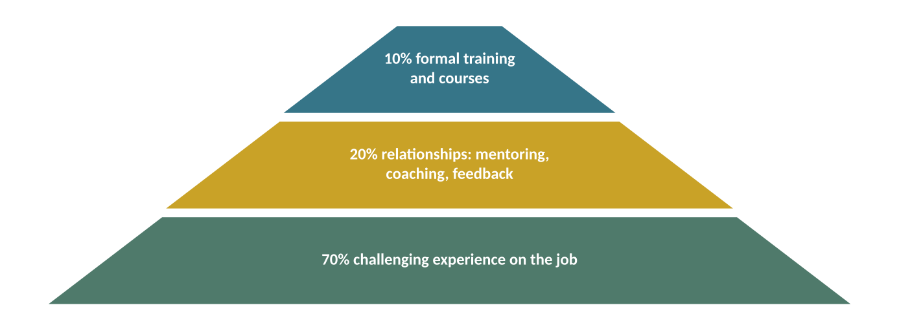
চিত্র ১৮. নেতৃত্ব শিখনের উৎস (৭০:২০:১০ নির্দেশক)
৪.৪ প্রেষণা, আত্মসচেতনতা, আত্মশৃঙ্খলা, শিক্ষা ও অভিজ্ঞতার মাধ্যমে নেতৃত্ব বিকাশ
প্রেষণা (Motives)
ডেভিড ম্যাকক্লেল্যান্ডের (McClelland) অর্জিত চাহিদা তত্ত্ব (acquired needs theory) অর্জন (nAch), সংশ্লিষ্টতা (nAff) ও ক্ষমতার (nPow) চাহিদা চিহ্নিত করে। কার্যকর ব্যবস্থাপকদের প্রায়ই সামাজিকীকৃত ক্ষমতার (যৌথ লক্ষ্যে ব্যবহৃত ক্ষমতা) উচ্চ চাহিদা এবং সংশ্লিষ্টতার মাঝারি চাহিদা থাকে (McClelland & Burnham, 1976)।
আত্মসচেতনতা (Self-awareness)
জোহারি জানালা (Johari Window) (Luft & Ingham, 1955) ফলাবর্তন ও আত্মপ্রকাশের মাধ্যমে আত্মসচেতনতা অর্জনের একটি ধ্রুপদি হাতিয়ার।
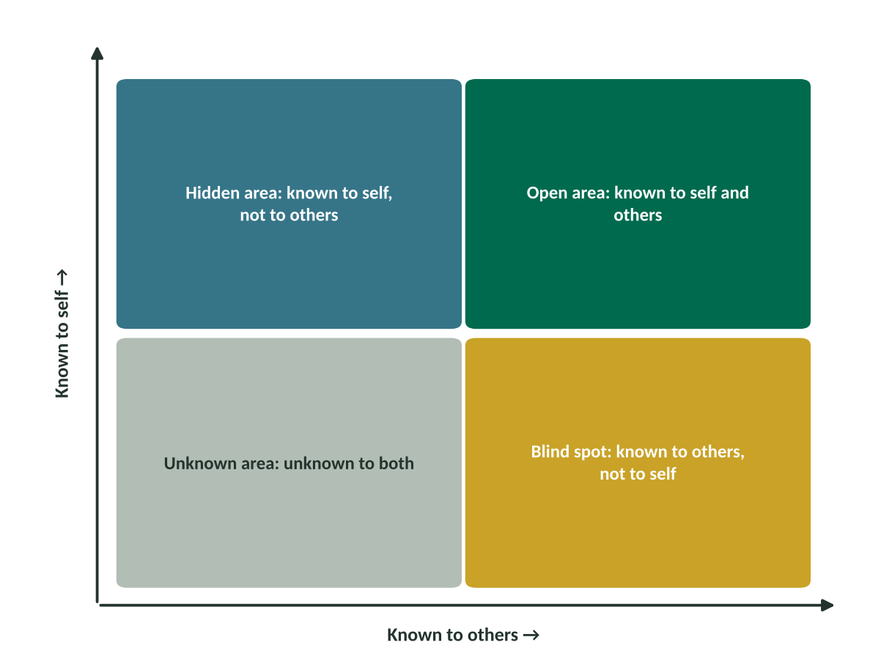
চিত্র ১৯. জোহারি জানালা
ফলাবর্তন গ্রহণের মাধ্যমে (অন্ধ অঞ্চল হ্রাস করে) এবং যথাযথ আত্মপ্রকাশের মাধ্যমে (গোপন অঞ্চল হ্রাস করে) উন্মুক্ত অঞ্চল সম্প্রসারিত করে নেতারা বিকশিত হন। ৩৬০-ডিগ্রি ফলাবর্তন (360-degree feedback), প্রতিফলনমূলক দিনলিপি এবং ব্যক্তিত্ব পরিমাপক তালিকাও (যেমন, Big Five, সতর্কতার সঙ্গে MBTI) আত্মসচেতনতা গড়ে তোলে।
আত্মশৃঙ্খলা (Self-discipline)
আত্মশৃঙ্খলার মধ্যে রয়েছে সময় ব্যবস্থাপনা, আবেগের আত্মনিয়ন্ত্রণ, কথা ও কাজের সামঞ্জস্য, নৈতিক আচরণ এবং শেখার জন্য ব্যক্তিগত নিয়মানুবর্তিতা। স্টিফেন কোভি-র (Covey, 1989) Seven Habits (সক্রিয় হোন; শেষ লক্ষ্য মাথায় রেখে শুরু করুন; গুরুত্বপূর্ণ কাজ আগে করুন; উভয়পক্ষের জয়ের কথা ভাবুন; আগে বুঝতে চেষ্টা করুন, তারপর বোঝাতে চেষ্টা করুন; সমন্বয় সাধন করুন; নিজেকে নিয়মিত শাণিত করুন) আত্ম-নেতৃত্বের জনপ্রিয় কাঠামো হিসেবে আজও বিবেচিত।
শিক্ষা ও প্রশিক্ষণ
| শিক্ষাব্যবস্থা | বিধান |
|---|---|
| ইংল্যান্ড | National Professional Qualification for Headship (NPQH) |
| সিঙ্গাপুর | NIE-তে Leaders in Education Programme (LEP); সতর্কতার সঙ্গে মেধা শনাক্তকরণ |
| যুক্তরাষ্ট্র | প্রধান শিক্ষকের লাইসেন্স, শিক্ষা নেতৃত্বে মাস্টার্স; ISLLC/PSEL মানদণ্ড |
| বাংলাদেশ | প্রতিষ্ঠানপ্রধান ও শিক্ষা কর্মকর্তাদের জন্য জাতীয় শিক্ষা ব্যবস্থাপনা একাডেমি (NAEM)-এর কোর্স; PEDP-এর আওতায় প্রধান শিক্ষকদের নেতৃত্ব প্রশিক্ষণ; শিক্ষা প্রশাসন ও নেতৃত্বে ডিপ্লোমা/এম.এড (IER, ঢাকা; অন্যান্য বিশ্ববিদ্যালয়); প্রাথমিক স্তরের জন্য প্রাইমারি টিচার্স ট্রেনিং ইনস্টিটিউট (PTI/TTC) ও জাতীয় প্রাথমিক শিক্ষা একাডেমি (NAPE) |
সারণি ১৯. নির্বাচিত শিক্ষাব্যবস্থায় নেতৃত্বের প্রস্তুতি
অভিজ্ঞতা ও মেন্টরিং
মেন্টরিং (mentoring) একটি দীর্ঘমেয়াদি বিকাশমূলক সম্পর্ক, অন্যদিকে কোচিং (coaching) একটি কাঠামোবদ্ধ, লক্ষ্যকেন্দ্রিক প্রক্রিয়া। GROW মডেল (Whitmore, 1992) কোচিংয়ের একটি প্রচলিত কাঠামো: Goal (লক্ষ্য), Reality (বাস্তবতা), Options (বিকল্প), Will (করণীয় বা অগ্রগতির পথ)। অভিজ্ঞ সহকর্মীদের দ্বারা নবনিযুক্ত প্রধান শিক্ষকদের মেন্টরিং, প্রধান শিক্ষকদের শিখন চক্র এবং কর্ম-পর্যবেক্ষণ (job shadowing) কার্যকর চর্চা।
৪.৫ নেতৃত্বের দক্ষতা গঠনমূলক অনুশীলন
| অনুশীলন | যে দক্ষতা বিকশিত হয় | কীভাবে কাজ করে |
|---|---|---|
| ইন-বাস্কেট (ইন-ট্রে) অনুশীলন | অগ্রাধিকার নির্ধারণ, সিদ্ধান্ত গ্রহণ | অংশগ্রহণকারীরা নির্দিষ্ট সময়ের মধ্যে কিছু স্মারকলিপি, অভিযোগ ও কাজ নিষ্পন্ন করেন |
| ভূমিকাভিনয় | যোগাযোগ, দ্বন্দ্ব মোকাবিলা | ক্ষুব্ধ অভিভাবক বা পরিবর্তনবিরোধী শিক্ষকের সঙ্গে একটি সভার অনুকরণ |
| কেস স্টাডি বিশ্লেষণ | সমস্যা নির্ণয়, সমস্যা সমাধান | বিদ্যালয় নেতৃত্বের একটি বাস্তব উভয়সংকট বিশ্লেষণ |
| ফিশবোল আলোচনা | শ্রবণ, সহায়তাকারীর ভূমিকা পালন | ভেতরের বৃত্ত আলোচনা করে, বাইরের বৃত্ত পর্যবেক্ষণ করে ও ফলাবর্তন দেয় |
| রূপকল্প রচনা কর্মশালা | রূপকল্প নির্ধারণ, যোগাযোগ | বিদ্যালয়ের রূপকল্প ও অভিলক্ষ্যের খসড়া প্রণয়ন ও উপস্থাপন |
| দলীয় চ্যালেঞ্জ (যেমন, টাওয়ার নির্মাণ) | সহযোগিতা, দায়িত্ব অর্পণ | দলগুলো সীমিত সম্পদ নিয়ে একটি কাজ সম্পন্ন করে, এরপর অভিজ্ঞতা পর্যালোচনা করে |
| কর্মভিত্তিক শিখন দল (Action learning sets) | প্রতিফলনমূলক সমস্যা সমাধান | ছোট দলগুলো প্রত্যেক সদস্যকে একটি বাস্তব সমস্যা নিয়ে কাজ করতে সহায়তা করে |
| ৩৬০-ডিগ্রি ফলাবর্তন | আত্মসচেতনতা (Self-awareness) | তত্ত্বাবধায়ক, সহকর্মী ও অধস্তনদের কাছ থেকে ফলাবর্তন |
সারণি ২০. প্রশিক্ষণ সেশনের জন্য নেতৃত্বের দক্ষতা গঠনমূলক কার্যক্রম
সহপাঠীদের সঙ্গে একটি ইন-বাস্কেট অনুশীলন করুন: পাঁচটি বিষয় নিন (যেমন, একজন শিক্ষকের অনুপস্থিতি, উৎপীড়ন নিয়ে একজন অভিভাবকের অভিযোগ, উপজেলা কার্যালয়ের আজকের মধ্যে জবাব দিতে হবে এমন একটি পরিপত্র, বিদ্যালয় ব্যবস্থাপনা কমিটির সভাপতির একটি অনুরোধ, খেলার মাঠে আহত একজন শিক্ষার্থী)। এগুলোকে ক্রমানুসারে সাজান, কী করবেন তা নির্ধারণ করুন এবং জরুরি-গুরুত্বপূর্ণ ছক ও নৈতিক অগ্রাধিকার ব্যবহার করে প্রতিটি সিদ্ধান্তের যৌক্তিকতা ব্যাখ্যা করুন।
সম্ভাব্য প্রশ্ন: "নেতা কি জন্মগত না তৈরি হন? গ্রনের মডেলের আলোকে আলোচনা করুন।" "একজন একীভূত নেতার বৈশিষ্ট্য বর্ণনা করুন।" "নেতৃত্ব বিকাশে আত্মসচেতনতা ও আবেগীয় বুদ্ধি কীভাবে অবদান রাখে তা ব্যাখ্যা করুন।" "বাংলাদেশে নবনিযুক্ত প্রধান শিক্ষকদের জন্য একটি নেতৃত্ব বিকাশ কর্মসূচির প্রস্তাব করুন।"
ইউনিট ৫: বাংলাদেশের শিক্ষায় নীতি, কৌশল ও নেতৃবৃন্দের ভূমিকা
অধ্যায়ের সারসংক্ষেপ
জাতীয় নেতৃবৃন্দ (মন্ত্রী, সচিব, মহাপরিচালক, NCTB, UGC ও বোর্ডসমূহের প্রধান) নীতিকে কৌশল ও কর্মসূচিতে রূপান্তর করেন, অর্থায়ন নিশ্চিত করেন, বিভিন্ন সংস্থা ও উন্নয়ন সহযোগীদের মধ্যে সমন্বয় করেন, জনগণের কাছে নীতি তুলে ধরেন এবং পরিবীক্ষণ নিশ্চিত করেন। তাঁরা সংস্কারের রাজনীতিও সামলান (স্বার্থগোষ্ঠীর বিরোধিতা, গণমাধ্যমের বিতর্ক)।
এই অধ্যায়ে আলোচিত বিষয়: শিক্ষানীতি বাস্তবায়নে নেতৃবৃন্দের ভূমিকা; সংগঠনে নেতৃত্ব ও আত্ম-ব্যবস্থাপনা; নেতৃত্ব ও দল গঠন; প্রেষণা ও জনবল ব্যবস্থাপনা; যোগাযোগ ও দ্বন্দ্ব ব্যবস্থাপনা।
মূল পরিভাষা:
- দল (Katzenbach & Smith, 1993): "পরিপূরক দক্ষতাসম্পন্ন অল্পসংখ্যক মানুষ, যাঁরা একটি সাধারণ উদ্দেশ্য, কর্মদক্ষতার লক্ষ্যসমষ্টি ও কর্মপন্থার প্রতি অঙ্গীকারবদ্ধ এবং যার জন্য তাঁরা নিজেদের পারস্পরিকভাবে জবাবদিহিমূলক মনে করেন।"
শিক্ষাক্রমে যা বলা হয়েছেইউনিট ৫: বাংলাদেশের শিক্ষায় নীতি, কৌশল ও নেতৃবৃন্দের ভূমিকা · ৮ সংযোগ ঘণ্টা
এই ইউনিট শেষে শিক্ষার্থীরা যা পারবে
- সাংগঠনিক/প্রাতিষ্ঠানিক ও জাতীয় পর্যায়ে নীতি ও কৌশল বাস্তবায়নে নেতৃবৃন্দের ভূমিকা বিশ্লেষণ করা
- সংগঠনে নেতা হিসেবে নিজেকে পরিচালনার জন্য পরিকল্পনা ও কৌশল প্রণয়ন করা
- দল গঠন করা এবং দল গঠনের উদ্দেশ্য বাস্তবায়ন করা
- সাংগঠনিক/প্রাতিষ্ঠানিক লক্ষ্য অর্জনে দলকে প্রেষণা দেওয়া এবং দলের প্রচেষ্টা পরিচালনা ও সমন্বয় করা
- যোগাযোগ দক্ষতা অর্জন ও প্রয়োগ করা
- দ্বন্দ্ব ব্যবস্থাপনায় নেতৃত্বের দক্ষতা প্রয়োগ করা
- শিক্ষানীতি বাস্তবায়নে নেতৃবৃন্দের ভূমিকা: সাংগঠনিক/প্রাতিষ্ঠানিক ও জাতীয় পর্যায়
- সংগঠনে নেতৃত্ব ও আত্ম-ব্যবস্থাপনা
- নেতৃত্ব ও দল গঠন
- প্রেষণা ও জনবল ব্যবস্থাপনা
- যোগাযোগ ও দ্বন্দ্ব ব্যবস্থাপনা
৫.১ শিক্ষানীতি বাস্তবায়নে নেতৃবৃন্দের ভূমিকা
জাতীয় পর্যায়
জাতীয় নেতৃবৃন্দ (মন্ত্রী, সচিব, মহাপরিচালক, NCTB, UGC ও বোর্ডসমূহের প্রধান) নীতিকে কৌশল ও কর্মসূচিতে রূপান্তর করেন, অর্থায়ন নিশ্চিত করেন, বিভিন্ন সংস্থা ও উন্নয়ন সহযোগীদের মধ্যে সমন্বয় করেন, জনগণের কাছে নীতি তুলে ধরেন এবং পরিবীক্ষণ নিশ্চিত করেন। তাঁরা সংস্কারের রাজনীতিও সামলান (স্বার্থগোষ্ঠীর বিরোধিতা, গণমাধ্যমের বিতর্ক)।
সাংগঠনিক ও প্রাতিষ্ঠানিক পর্যায়
প্রধান শিক্ষক, অধ্যক্ষ, ডিন ও বিভাগীয় প্রধানগণ নীতির মধ্যস্থতাকারী (mediators) হিসেবে কাজ করেন। স্পিলেন, রেইজার ও রেইমার (Spillane, Reiser and Reimer, 2002) দেখান যে বাস্তবায়নকারীরা তাঁদের বিদ্যমান জ্ঞান, বিশ্বাস ও প্রেক্ষাপটের মাধ্যমে নীতির অর্থ নির্মাণ (sense) করেন; নেতারা আলোচনা, আদর্শ স্থাপন ও সহায়তার মাধ্যমে এই অর্থ নির্মাণ প্রক্রিয়াকে রূপ দেন।

চিত্র ২০. প্রাতিষ্ঠানিক নেতারা কীভাবে জাতীয় নীতিকে চর্চায় রূপান্তর করেন
ফুলানের (Fullan, 2016) পরিবর্তন-জ্ঞান যে বিষয়গুলোর ওপর জোর দেয়: অল্পসংখ্যক উচ্চাভিলাষী লক্ষ্যে মনোযোগ; একটি পথপ্রদর্শক জোট; ফলাফলকেন্দ্রিক সক্ষমতা উন্নয়ন; বাস্তবায়ন থেকে শিক্ষা গ্রহণ ("বাস্তবায়নকালীন অবনমন" বা implementation dip); স্বচ্ছতার সংস্কৃতি; এবং বুদ্ধিদীপ্ত জবাবদিহি।
৫.২ সংগঠনে নেতৃত্ব ও আত্ম-ব্যবস্থাপনা
নেতাদের প্রথমে নিজেকে নেতৃত্ব দিতে হয়। পিটার ড্রাকারের (Drucker, 1999) "Managing Oneself" প্রশ্ন করে: আমার সবলতা কী? আমি কীভাবে কাজ করি? আমার মূল্যবোধ কী? আমি কোথায় মানানসই? আমি কী অবদান রাখতে পারি?
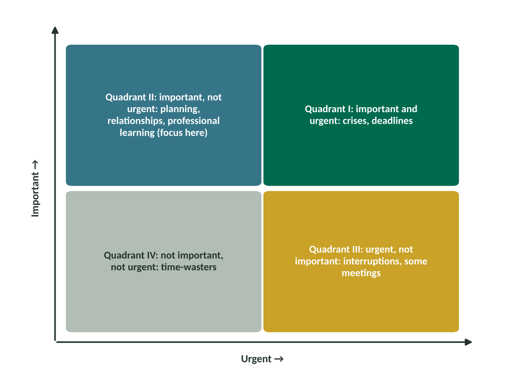
চিত্র ২১. কোভি-র সময় ব্যবস্থাপনা ছক
আত্ম-ব্যবস্থাপনার মূল চর্চাগুলো হলো: লক্ষ্য নির্ধারণ ও পরিকল্পনা (SMART লক্ষ্য), অগ্রাধিকার নির্ধারণ, দায়িত্ব অর্পণ, চাপ ও সুস্থতা ব্যবস্থাপনা, প্রতিফলনমূলক চর্চা (Schön, 1983: কাজের মধ্যে প্রতিফলন ও কাজের ওপর প্রতিফলন), নিরবচ্ছিন্ন শিখন এবং চাপের মধ্যেও নৈতিক সততা বজায় রাখা।
৫.৩ নেতৃত্ব ও দল গঠন
দল (team) (Katzenbach & Smith, 1993): "পরিপূরক দক্ষতাসম্পন্ন অল্পসংখ্যক মানুষ, যাঁরা একটি সাধারণ উদ্দেশ্য, কর্মদক্ষতার লক্ষ্যসমষ্টি ও কর্মপন্থার প্রতি অঙ্গীকারবদ্ধ এবং যার জন্য তাঁরা নিজেদের পারস্পরিকভাবে জবাবদিহিমূলক মনে করেন।"
দল বিকাশের পর্যায়সমূহ

চিত্র ২২. টাকম্যানের দল বিকাশের পর্যায়সমূহ (1965; Tuckman & Jensen, 1977)
| পর্যায় | দলীয় আচরণ | নেতার ভূমিকা |
|---|---|---|
| গঠন (Forming) | ভদ্র, অনিশ্চিত, নির্ভরশীল | উদ্দেশ্য, ভূমিকা ও মৌলিক নিয়মাবলি স্পষ্ট করুন |
| সংঘাত (Storming) | দ্বন্দ্ব, প্রতিরোধ | মধ্যস্থতা করুন, মনোযোগ দিয়ে শুনুন, লক্ষ্যে পুনরায় মনোযোগ ফিরিয়ে আনুন |
| রীতি প্রতিষ্ঠা (Norming) | রীতিনীতি বিষয়ে ঐকমত্য, আস্থা | সহায়তা করুন, দায়িত্ব অর্পণ করুন, সংহতি গড়ে তুলুন |
| কর্মসম্পাদন (Performing) | স্বাধীন, উৎপাদনশীল | ক্ষমতায়ন করুন, স্বীকৃতি দিন, বাধা দূর করুন |
| সমাপন (Adjourning) | কাজ শেষ হয় | সাফল্য উদ্যাপন করুন, মূল্যায়ন করুন, অর্জিত শিক্ষা সংরক্ষণ করুন |
সারণি ২১. টাকম্যানের পর্যায়গুলোতে নেতার ভূমিকা
দলীয় ভূমিকা
মেরেডিথ বেলবিন (Belbin, 1981, 2010) নয়টি দলীয় ভূমিকা চিহ্নিত করেন: উদ্ভাবক (Plant), সম্পদ অনুসন্ধানকারী (Resource Investigator), সমন্বয়কারী (Coordinator), রূপদানকারী (Shaper), পর্যবেক্ষক-মূল্যায়নকারী (Monitor Evaluator), দলকর্মী (Teamworker), বাস্তবায়নকারী (Implementer), সমাপ্তিকারী (Completer Finisher) এবং বিশেষজ্ঞ (Specialist)। ভারসাম্যপূর্ণ দলে কর্মমুখী, মানুষমুখী ও চিন্তামুখী ভূমিকার মিশ্রণ থাকে।
শিক্ষায় দল গঠনের উদ্দেশ্য
অভিন্ন রূপকল্প গড়ে তোলা; শিক্ষকদের মধ্যে সহযোগিতা বৃদ্ধি (পেশাগত শিখন সম্প্রদায়, PLC); নেতৃত্ব বণ্টন; যৌথভাবে সমস্যা সমাধান; অঙ্গীকার ও মনোবল বৃদ্ধি; এবং সামঞ্জস্যপূর্ণ শিক্ষাদানের মাধ্যমে শিখনফলের উন্নয়ন।
৫.৪ প্রেষণা ও জনবল ব্যবস্থাপনা
| তত্ত্ব | মূল ধারণা | নেতাদের জন্য তাৎপর্য |
|---|---|---|
| মাসলোর চাহিদার সোপান (Maslow's hierarchy of needs, 1943) | শারীরবৃত্তীয়, নিরাপত্তা, সংশ্লিষ্টতা, সম্মান ও আত্মোপলব্ধির চাহিদা | উচ্চস্তরের সম্পৃক্ততা প্রত্যাশার আগে মৌলিক অবস্থা (বেতন, নিরাপত্তা) নিশ্চিত করুন |
| হার্জবার্গের দ্বি-উপাদান তত্ত্ব (Herzberg's two-factor theory, 1959) | স্বাস্থ্যবিধান উপাদান (hygiene factors) (বেতন, নীতি, কর্মপরিবেশ) অসন্তুষ্টি প্রতিরোধ করে; প্রেষণাদায়ক উপাদান (অর্জন, স্বীকৃতি, দায়িত্ব, বিকাশ) সন্তুষ্টি সৃষ্টি করে | কেবল বেতনের চেয়ে স্বীকৃতি ও বিকাশের সুযোগ শিক্ষকদের বেশি প্রেষণা দেয় |
| ম্যাকগ্রেগরের তত্ত্ব X ও তত্ত্ব Y (McGregor's Theory X and Theory Y, 1960) | X: মানুষ কাজ অপছন্দ করে এবং তাদের নিয়ন্ত্রণ প্রয়োজন; Y: মানুষ দায়িত্ব ও স্ব-নির্দেশনা চায় | আস্থাভিত্তিক নেতৃত্ব তত্ত্ব Y-কে ভিত্তি হিসেবে ধরে নেয় |
| ভ্রুমের প্রত্যাশা তত্ত্ব (Vroom's expectancy theory, 1964) | প্রেষণা (Motivation) = প্রত্যাশা (Expectancy) × সহায়কতা (Instrumentality) × মূল্যমান (Valence) | লক্ষ্যকে অর্জনযোগ্য করুন, কর্মদক্ষতাকে ন্যায্যভাবে মূল্যবান পুরস্কারের সঙ্গে যুক্ত করুন |
| অ্যাডামসের ন্যায্যতা তত্ত্ব (Adams's equity theory, 1963) | মানুষ নিজের উপকরণ-প্রাপ্তির অনুপাতকে অন্যদের সঙ্গে তুলনা করে | কাজের চাপ, পদোন্নতি ও পদায়নে ন্যায্যতা |
| লকের লক্ষ্য নির্ধারণ তত্ত্ব (Locke's goal-setting theory, 1968) | ফলাবর্তনসহ সুনির্দিষ্ট ও চ্যালেঞ্জিং লক্ষ্য কর্মদক্ষতা বাড়ায় | ফলাবর্তনসহ সুস্পষ্ট লক্ষ্যমাত্রা নির্ধারণ করুন |
| আত্মনিয়ন্ত্রণ তত্ত্ব (Self-determination theory) (Deci & Ryan, 1985) | স্বায়ত্তশাসন, সক্ষমতা ও সম্পর্কবোধ অন্তর্নিহিত প্রেষণা জোগায় | পেশাগত স্বায়ত্তশাসন দিন, বিকাশে সহায়তা করুন, সহকর্মীসুলভ সম্পর্ক গড়ে তুলুন |
সারণি ২২. প্রেষণার প্রধান তত্ত্বসমূহ ও শিক্ষা নেতাদের জন্য তাদের তাৎপর্য
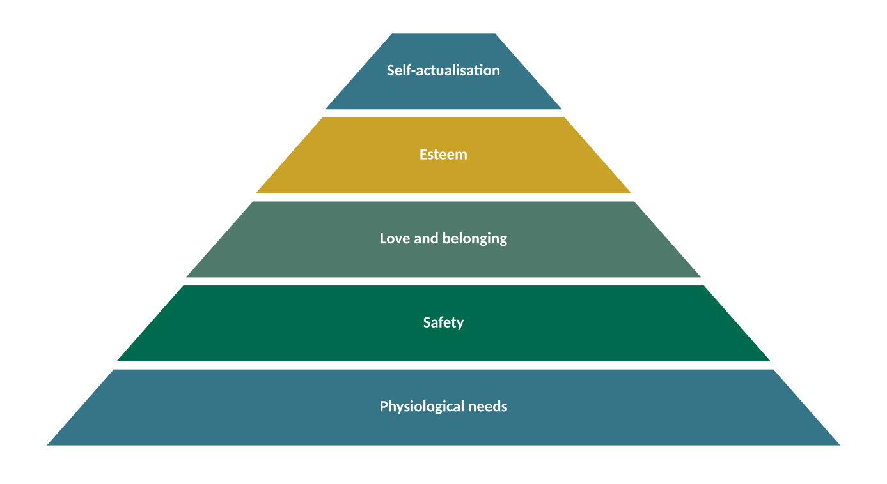
চিত্র ২৩. মাসলোর চাহিদার সোপান
শিক্ষায় জনবল ব্যবস্থাপনার (people management) অন্তর্ভুক্ত রয়েছে নিয়োগ ও প্রারম্ভিক পরিচিতি (induction), কাজের চাপ বণ্টন, কর্মদক্ষতা মূল্যায়ন (যেমন, বাংলাদেশে বার্ষিক গোপনীয় প্রতিবেদন (ACR) / বার্ষিক কর্মসম্পাদন চুক্তি (APA)), পেশাগত উন্নয়ন, স্বীকৃতি, কল্যাণ এবং অভিযোগ নিষ্পত্তি।
বাংলাদেশে শিক্ষকের প্রেষণা প্রভাবিত হয় বেতন স্কেল, বেসরকারি প্রতিষ্ঠানে এমপিও (MPO) অবস্থা, পদোন্নতির জটিলতা, বদলি নীতি, শ্রেণির আকার, শিক্ষাদানবহির্ভূত দায়িত্ব (যেমন, শুমারি ও নির্বাচনী দায়িত্ব) এবং সামাজিক মর্যাদা দ্বারা। স্বীকৃতি প্রদান কর্মসূচি, পেশাগত অগ্রগতির সোপান এবং সহায়ক তত্ত্বাবধান হলো স্বল্পব্যয়ী প্রেষণাদায়ক উপায়, যা প্রতিষ্ঠানপ্রধানদের নিয়ন্ত্রণাধীন।
৫.৫ যোগাযোগ ও দ্বন্দ্ব ব্যবস্থাপনা
যোগাযোগ
যোগাযোগ (communication) হলো ফলাবর্তনসহ একটি মাধ্যমের সাহায্যে প্রেরক থেকে প্রাপকের কাছে অর্থ প্রেরণের প্রক্রিয়া। শ্যানন-উইভার (Shannon-Weaver, 1949) মডেল এতে বিঘ্ন (noise) যুক্ত করে; পরবর্তী মডেলগুলো যোগাযোগকে একটি দ্বিমুখী, পারস্পরিক বিনিময়মূলক প্রক্রিয়া হিসেবে গুরুত্ব দেয়।
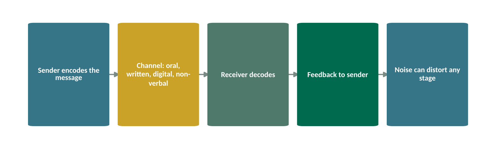
চিত্র ২৪. যোগাযোগ প্রক্রিয়া
| প্রতিবন্ধকতা | উদাহরণ | প্রতিকার |
|---|---|---|
| অর্থগত (Semantic) | পরিপত্রে পরিভাষার জটিলতা | সহজ ভাষা, উদাহরণ |
| ভৌত | শব্দদূষণ, দূরত্ব, দুর্বল সংযোগ | উপযুক্ত মাধ্যম ও সময় নির্বাচন |
| মনস্তাত্ত্বিক | ভয়, মর্যাদার পার্থক্য, অবিশ্বাস | আস্থা গড়ে তোলা, উন্মুক্ত দ্বার নীতি |
| সাংগঠনিক | অতিরিক্ত স্তরবিশিষ্ট ক্রমোচ্চ কাঠামো | সরাসরি যোগাযোগের মাধ্যম, দলীয় সভা |
| সাংস্কৃতিক | ভিন্ন রীতিনীতি, ভাষা | সাংস্কৃতিক সংবেদনশীলতা, অনুবাদ |
| তথ্যের অতিভার | একই সময়ে বহু নির্দেশনা | অগ্রাধিকার নির্ধারণ ও সারসংক্ষেপ |
সারণি ২৩. কার্যকর যোগাযোগের প্রতিবন্ধকতা ও প্রতিকার
নেতাদের যোগাযোগ দক্ষতার মধ্যে রয়েছে সক্রিয় শ্রবণ, সুস্পষ্ট ও সংক্ষিপ্ত বার্তা প্রদান, গঠনমূলক ফলাবর্তন দেওয়া, কার্যকর সভা পরিচালনা, লিখিত যোগাযোগ, জনসমক্ষে বক্তৃতা এবং ডিজিটাল যোগাযোগ।
দ্বন্দ্ব ব্যবস্থাপনা
দ্বন্দ্ব (conflict) হলো এমন একটি প্রক্রিয়া, যা শুরু হয় যখন এক পক্ষ অনুভব করে যে অন্য পক্ষ তার কাছে গুরুত্বপূর্ণ কোনো বিষয়কে নেতিবাচকভাবে প্রভাবিত করেছে বা করতে যাচ্ছে (Robbins & Judge)। দ্বন্দ্ব হতে পারে কার্যকর (functional) (সিদ্ধান্ত ও উদ্ভাবনের উন্নতি ঘটায়) অথবা অকার্যকর (dysfunctional) (সম্পর্ক ও কর্মদক্ষতার ক্ষতি করে)।
শিক্ষাপ্রতিষ্ঠানে দ্বন্দ্বের উৎস: সীমিত সম্পদ, ভূমিকার অস্পষ্টতা, মূল্যবোধ বা লক্ষ্যের পার্থক্য, যোগাযোগের ব্যর্থতা, ব্যক্তিত্বের সংঘাত, কাজের চাপ ও সময়সূচি বণ্টন, পদোন্নতি, রাজনৈতিক সংশ্লিষ্টতা এবং ব্যবস্থাপনা কমিটি ও প্রতিষ্ঠানপ্রধানের মধ্যে বিরোধ।

চিত্র ২৫. টমাস-কিলম্যান দ্বন্দ্ব মোকাবিলার ধরন (Thomas & Kilmann, 1974)
আপস ছকের মাঝখানে অবস্থান করে: আংশিক দৃঢ়তাপূর্ণ এবং আংশিক সহযোগিতামূলক।
| মাধ্যম | কখন উপযুক্ত |
|---|---|
| প্রতিযোগিতা (Competing) | দ্রুত ও দৃঢ় পদক্ষেপ অপরিহার্য (নিরাপত্তা); অজনপ্রিয় কিন্তু প্রয়োজনীয় বিধি |
| সহযোগিতা (Collaborating) | উভয় পক্ষের উদ্বেগ আপসের পক্ষে অতি গুরুত্বপূর্ণ; অঙ্গীকার গড়ে তোলা |
| আপস (Compromising) | লক্ষ্য মাঝারি মাত্রায় গুরুত্বপূর্ণ; সাময়িক মীমাংসা প্রয়োজন |
| এড়িয়ে চলা (Avoiding) | বিষয়টি তুচ্ছ; উত্তেজনা প্রশমনের সময় প্রয়োজন |
| মানিয়ে নেওয়া (Accommodating) | সম্পর্ক বেশি গুরুত্বপূর্ণ; আপনি ভুল |
সারণি ২৪. দ্বন্দ্ব মোকাবিলার প্রতিটি ধরন কখন ব্যবহার করবেন
একটি কেস ব্যবহার করে দ্বন্দ্ব ব্যবস্থাপনা অনুশীলন করুন: দশম শ্রেণির বিজ্ঞান ক্লাস কে নেবেন তা নিয়ে দুজন জ্যেষ্ঠ শিক্ষকের মধ্যে বিরোধ। দ্বন্দ্বের উৎস চিহ্নিত করুন, একটি মোকাবিলার ধরন বেছে নিন এবং স্বার্থভিত্তিক আলোচনা-সমঝোতার ভূমিকাভিনয় করুন (Fisher & Ury-এর Getting to Yes: মানুষকে সমস্যা থেকে পৃথক করুন; অবস্থান নয়, স্বার্থের ওপর মনোযোগ দিন; পারস্পরিক লাভের বিকল্প উদ্ভাবন করুন; বস্তুনিষ্ঠ মানদণ্ড ব্যবহার করুন)।
বাংলাদেশের শিক্ষাপ্রতিষ্ঠানে নেতৃত্ব সুদৃঢ় স্তরক্রম, রাজনৈতিক প্রভাব ও আমলাতান্ত্রিক জবাবদিহির মধ্যে পরিচালিত হয়। পশ্চিমা মডেলগুলোর (বণ্টিত, রূপান্তরমূলক) সাংস্কৃতিক অভিযোজন প্রয়োজন: ক্ষমতার দূরত্ব (power distance) (Hofstede) এখানে উচ্চ, এবং পরিবর্তনের জন্য আনুষ্ঠানিক কর্তৃত্বের সঙ্গে কাজ করার পাশাপাশি ধীরে ধীরে সহযোগিতামূলক সংস্কৃতি গড়ে তোলার প্রয়োজন হতে পারে।
সম্ভাব্য প্রশ্ন: "বাংলাদেশে জাতীয় শিক্ষানীতি বাস্তবায়নে বিদ্যালয় নেতৃবৃন্দের ভূমিকা আলোচনা করুন।" "দল কী? টাকম্যানের দল বিকাশের পর্যায়সমূহ এবং প্রতিটি পর্যায়ে নেতার ভূমিকা ব্যাখ্যা করুন।" "হার্জবার্গের দ্বি-উপাদান তত্ত্ব এবং বাংলাদেশে শিক্ষকের প্রেষণায় এর তাৎপর্য ব্যাখ্যা করুন।" "শিক্ষাপ্রতিষ্ঠানের উদাহরণসহ টমাস-কিলম্যানের দ্বন্দ্ব মোকাবিলার ধরনগুলো আলোচনা করুন।" "একজন প্রধান শিক্ষক কীভাবে নিজেকে ও সময়কে কার্যকরভাবে ব্যবস্থাপনা করতে পারেন?"
পাঠতালিকা
শিক্ষাক্রমে সুপারিশকৃত
অফিশিয়াল কোর্স শিক্ষাক্রমে তালিকাভুক্ত বই, জার্নাল ও প্রতিবেদন, সেখানে যেভাবে দেওয়া আছে।
- Arlestig, H., Day, C., & Johansson, O. (2016). A decade of research on school principals: Cases from 24 countries. Springer.
- Ball, S. J. (1995). Politics and policy-making in Education:Explorations in sociology. Routledge.
- Bell, L. & Stevenson, H. (2006). Education policy: Process, themes and impact. Routledge.
- Bennett, N.,Crawford, M., & Cartwright, M. (Eds.). (2002).Effective educational leadership. Sage.
- Ben-Peretz, M. (2009). Policy-making in education: A holistic approach in response to global changes. Rowman & Little field Education.
- Bush, T. & Burnham, J.W. (1994). The Principles of Educational Management. Longman.
- Bush, T., Bell, L., & Middlewood, D. (2010). The principles of educational leadership & management. Sage
- Davies, B. (2011). Leading the strategically focused school: Success and sustainability (2nd ed.). Sage.
- Everard, K. B., Morris, G., & Wilson, I. (2004). Effective school management. Sage.
- Goel, S. L. & Goel, A. (1994). Educational policy & administration. Deep Publishers.
- Gronn, P. (1999). The making of educational leaders. Cassel.
- Hargreaves, A., Lieberman, A., Fullan, M., & Hopkins, D. (Eds.). (2010). Second international handbook of educational change. Springer.
- Harris, A., & Lambert, L. (2003). Building leadership capacity for school improvement. McGraw-Hill Education.
- Harris, A., Day, C., Hopkins, D., Hadfield, M., Hargreaves, A., & Chapman, C. (2013). Effective leadership for school improvement. Routledge.
- Jones, B. A. (2000). Educational leadership: Policy dimensions in the 21st century. Ablex.
- Northouse, P. G. (2018). Leadership: Theory and practice. Sage publications.
- Northouse, P. G. (2017). Introduction to leadership: Concepts and practice. Sage Publications.
- Robinson, V. M., Hohepa, M. K., Lloyd, C., & New Zealand Ministry of Education. (2009). School leadership and student outcomes: Identifying what works and why: Best evidence synthesis iteration (BES). Ministry of Education.
- Salahuddin, A. (2016). Making a Door: A case study of the leadership and change practices of a principal in Bangladesh (Doctoral dissertation, The University of Canterbury).
- Salahuddin, A. (2011). Perceptions of effective leadership in Bangladesh secondary schools: Moving towards distributed leadership? (Masters thesis, The University of Canterbury)
- Sloan, J. (2013). Learning to think strategically (2nd ed.). Taylor and Francis.
- Thomas, N. (2004). The John Adair handbook of management and leadership. Thorogood.
- Townsend, T., & MacBeath, J. (Eds.). (2011). International handbook of leadership for learning (Vol. 25). Springer.
- Trowler, P. (2003). Education Policy. Routledge.
- UNESCO, (1995). Learning the Treasure Within UNESCO, World Declaration on Education: Education For All and Frame work for Action to Meet Basic Learning Needs, EFA Forum.
- Whitty, G. (2002). Making sense of education policy: Studies in the sociology and politics of education. Sage.
- শিক্ষা মন্ত্রণালয় (২০১০), জাতীয় শিক্ষানীতি-২০১০, ঢাকা।
- Relevant Govt. Documents & Reports, Acts, Regulations.
- Related Journal articles & Websites.
এই বিষয়ে বিশ্বব্যাপী বহুল পঠিত বই
এই কোর্সের সঙ্গে মানানসই সুপরিচিত আন্তর্জাতিক বই।
- Ball, S. J. (2017). The Education Debate (3rd ed.). Policy Press.
- Fullan, M. (2016). The New Meaning of Educational Change (5th ed.). Teachers College Press.
- Bush, T. (2020). Theories of Educational Leadership and Management (5th ed.). Sage.
- Leithwood, K., Harris, A., & Hopkins, D. (2020). Seven strong claims about successful school leadership revisited. School Leadership & Management, 40(1), 5–22.
- Haddad, W. D., & Demsky, T. (1995). Education Policy-Planning Process: An Applied Framework. UNESCO-IIEP.
- Northouse, P. G. (2021). Leadership: Theory and Practice (9th ed.). Sage.
- Hargreaves, A., & Fullan, M. (2012). Professional Capital: Transforming Teaching in Every School. Teachers College Press.
পরীক্ষা প্রস্তুতি প্রশ্নব্যাংক
ক. বহুনির্বাচনি প্রশ্ন (MCQ)
১. "সরকার যা করতে বা না করতে বেছে নেয়, তা-ই" সরকারি নীতির এই সংজ্ঞা দিয়েছেন:
(a) Easton (b) Dye (c) Lasswell (d) Ball
উত্তর দেখুন
উত্তর: (b)
২. নীতিকে "মূল্যবোধের কর্তৃত্বপূর্ণ বণ্টন" হিসেবে প্রস্তাব করেছেন:
(a) David Easton (b) Herbert Simon (c) Charles Lindblom (d) Thomas Dye
উত্তর দেখুন
উত্তর: (a)
৩. নীতি একাধারে "পাঠ্য" ও "ডিসকোর্স", এই ধারণাটি যাঁর সঙ্গে সম্পর্কিত:
(a) Stephen Ball (b) Michael Fullan (c) Henry Mintzberg (d) Peter Northouse
উত্তর দেখুন
উত্তর: (a)
৪. "মাঠপর্যায়ের আমলা" (street-level bureaucrats) ধারণাটি প্রবর্তন করেছেন:
(a) Lipsky (b) Kingdon (c) Elmore (d) Simon
উত্তর দেখুন
উত্তর: (a)
৫. নীতি প্রণয়নের ক্রমবর্ধিষ্ণু মডেল ("কোনোমতে এগিয়ে চলা") প্রস্তাব করেছেন:
(a) Etzioni (b) Lindblom (c) Dror (d) Easton
উত্তর দেখুন
উত্তর: (b)
৬. কিংডনের বহুধারা কাঠামোতে সমস্যা, নীতি এবং আরও অন্তর্ভুক্ত:
(a) অর্থনৈতিক ধারা (b) রাজনীতির ধারা (c) সামাজিক ধারা (d) বাজেট ধারা
উত্তর দেখুন
উত্তর: (b)
৭. "আবর্জনার ঝুড়ি" (garbage can) মডেলটি প্রণয়ন করেছেন:
(a) Cohen, March ও Olsen (b) Bowe, Ball ও Gold (c) Pressman ও Wildavsky (d) Sabatier ও Mazmanian
উত্তর দেখুন
উত্তর: (a)
৮. বাস্তবায়ন গবেষণায় পশ্চাৎমুখী মানচিত্রায়ণ (backward mapping) যাঁর সঙ্গে সম্পর্কিত:
(a) Elmore (b) Lipsky (c) Lowi (d) Dye
উত্তর দেখুন
উত্তর: (a)
৯. বাংলাদেশে শিক্ষাক্রম ও পাঠ্যপুস্তকের দায়িত্বে কোন সংস্থা?
(a) UGC (b) NCTB (c) BANBEIS (d) NAEM
উত্তর দেখুন
উত্তর: (b)
১০. কৌশলের "৫টি P" প্রস্তাব করেছেন:
(a) Porter (b) Mintzberg (c) Chandler (d) Drucker
উত্তর দেখুন
উত্তর: (b)
১১. "কৌশল হলো একটি প্রতিষ্ঠানের মৌলিক দীর্ঘমেয়াদি লক্ষ্য নির্ধারণ..." এই সংজ্ঞা দিয়েছেন:
(a) Chandler (b) Mintzberg (c) Johnson (d) Kotter
উত্তর দেখুন
উত্তর: (a)
১২. SWOT বিশ্লেষণে "হুমকি" (threats) হলো:
(a) অভ্যন্তরীণ ও নেতিবাচক (b) বাহ্যিক ও নেতিবাচক (c) অভ্যন্তরীণ ও ইতিবাচক (d) বাহ্যিক ও ইতিবাচক
উত্তর দেখুন
উত্তর: (b)
১৩. বাংলাদেশের প্রাথমিক শিক্ষায় SLIP-এর পূর্ণরূপ:
(a) School Leadership Improvement Programme (b) School Level Improvement Plan (c) Strategic Learning Investment Plan (d) Student Learning Improvement Project
উত্তর দেখুন
উত্তর: (b)
১৪. ভারসাম্যপূর্ণ স্কোরকার্ড (Balanced Scorecard) প্রণয়ন করেছেন:
(a) Kaplan ও Norton (b) Blake ও Mouton (c) Hersey ও Blanchard (d) Katz ও Kahn
উত্তর দেখুন
উত্তর: (a)
১৫. "নেতৃত্ব এমন একটি প্রক্রিয়া, যার মাধ্যমে একজন ব্যক্তি একটি সাধারণ লক্ষ্য অর্জনের জন্য একটি দলকে প্রভাবিত করেন" সংজ্ঞাটি যাঁর:
(a) Stogdill (b) Northouse (c) Burns (d) Bass
উত্তর দেখুন
উত্তর: (b)
১৬. "ব্যবস্থাপকেরা কাজ সঠিকভাবে করেন; নেতারা সঠিক কাজটি করেন" উক্তিটি যাঁর বলে ধরা হয়:
(a) Bennis (b) Fayol (c) Taylor (d) Weber
উত্তর দেখুন
উত্তর: (a)
১৭. কাৎজের মতে প্রশাসকদের তিনটি দক্ষতা হলো কারিগরি, মানবিক এবং:
(a) ধারণাগত (b) আবেগীয় (c) রাজনৈতিক (d) আধ্যাত্মিক
উত্তর দেখুন
উত্তর: (a)
১৮. ব্যবস্থাপনা গ্রিডে 9,9 ধরনটি হলো:
(a) কান্ট্রি ক্লাব (b) দলীয় ব্যবস্থাপনা (c) কর্তৃত্ব-আনুগত্য (d) নিঃস্ব
উত্তর দেখুন
উত্তর: (b)
১৯. LPC স্কেলটি যে তত্ত্বের অন্তর্গত:
(a) পথ-লক্ষ্য তত্ত্ব (b) ফিডলারের পরিস্থিতিনির্ভর তত্ত্ব (c) পরিস্থিতিগত নেতৃত্ব (d) LMX তত্ত্ব
উত্তর দেখুন
উত্তর: (b)
২০. হার্সি ও ব্ল্যানচার্ডের মডেলে উচ্চ নির্দেশনামূলক ও উচ্চ সহায়তামূলক আচরণ হলো:
(a) নির্দেশনা প্রদান (Directing) (b) কোচিং (Coaching) (c) সহায়তা প্রদান (Supporting) (d) দায়িত্ব অর্পণ (Delegating)
উত্তর দেখুন
উত্তর: (b)
২১. রূপান্তরকারী নেতৃত্বের ধারণা প্রথম উপস্থাপন করেন:
(a) James MacGregor Burns (b) Bernard Bass (c) Robert House (d) Fred Fiedler
উত্তর দেখুন
উত্তর: (a)
২২. কোনটি বাস-এর চারটি I-এর একটি নয়?
(a) আদর্শায়িত প্রভাব (Idealised influence) (b) বুদ্ধিবৃত্তিক উদ্দীপনা (Intellectual stimulation) (c) ব্যক্তিকেন্দ্রিক বিবেচনা (Individualised consideration) (d) সহায়ক নিয়ন্ত্রণ (Instrumental control)
উত্তর দেখুন
উত্তর: (d)
২৩. বণ্টিত নেতৃত্ব সবচেয়ে বেশি যাঁদের সঙ্গে সম্পর্কিত:
(a) Spillane ও Gronn (b) Taylor ও Fayol (c) Maslow ও Herzberg (d) Blake ও Mouton
উত্তর দেখুন
উত্তর: (a)
২৪. রবিনসন ও সহযোগীরা (Robinson et al., 2009) নেতৃত্বের সবচেয়ে বেশি প্রভাব পেয়েছেন যে ক্ষেত্রে:
(a) কৌশলগত সম্পদ সংস্থান (b) শিক্ষকের শিখনকে উৎসাহিত করা ও তাতে অংশগ্রহণ (c) সুশৃঙ্খল পরিবেশ নিশ্চিত করা (d) লক্ষ্য নির্ধারণ
উত্তর দেখুন
উত্তর: (b)
২৫. সেবক নেতৃত্বের ধারণা প্রবর্তন করেন:
(a) Greenleaf (b) Sergiovanni (c) Heifetz (d) Goleman
উত্তর দেখুন
উত্তর: (a)
২৬. নারী নেতাদের প্রতি কুসংস্কার সম্পর্কিত ভূমিকা-সামঞ্জস্য তত্ত্ব প্রস্তাব করেন:
(a) Eagly ও Karau (b) Ryan ও Haslam (c) Kanter (d) Hofstede
উত্তর দেখুন
উত্তর: (a)
২৭. "কাচের খাদ" (glass cliff) বলতে বোঝায়:
(a) শীর্ষে বাধা (b) ঝুঁকিপূর্ণ নেতৃত্বের পদে নারীদের নিয়োগ (c) শিক্ষকতায় পুরুষের আধিপত্য (d) বেতন বৈষম্য
উত্তর দেখুন
উত্তর: (b)
২৮. গ্রনের নেতৃত্ব-কর্মজীবনের পর্যায়গুলো হলো গঠন, অভিগমন, পদে অধিষ্ঠান এবং:
(a) অবসর (b) পদত্যাগ/বিযুক্তি (divestiture) (c) উত্তরাধিকার (d) মেন্টরিং
উত্তর দেখুন
উত্তর: (b)
২৯. জোহারি জানালা প্রণয়ন করেছেন:
(a) Luft ও Ingham (b) Belbin (c) Tuckman (d) Covey
উত্তর দেখুন
উত্তর: (a)
৩০. GROW কোচিং মডেলের পূর্ণরূপ Goal, Reality, Options এবং:
(a) Work (b) Will (c) Win (d) Wisdom
উত্তর দেখুন
উত্তর: (b)
৩১. টাকম্যানের যে পর্যায়টি ভূমিকা নিয়ে দ্বন্দ্ব দ্বারা চিহ্নিত:
(a) গঠন (Forming) (b) সংঘাত (Storming) (c) রীতি প্রতিষ্ঠা (Norming) (d) কর্মসম্পাদন (Performing)
উত্তর দেখুন
উত্তর: (b)
৩২. হার্জবার্গের তত্ত্বে নিচের কোনটি একটি "প্রেষণাদায়ক উপাদান" (motivator)?
(a) বেতন (b) কর্মপরিবেশ (c) স্বীকৃতি (d) প্রতিষ্ঠানের নীতি
উত্তর দেখুন
উত্তর: (c)
৩৩. তত্ত্ব X ও তত্ত্ব Y প্রস্তাব করেছেন:
(a) McGregor (b) McClelland (c) Maslow (d) Vroom
উত্তর দেখুন
উত্তর: (a)
৩৪. প্রেষণা = প্রত্যাশা × সহায়কতা × মূল্যমান (Motivation = Expectancy × Instrumentality × Valence) হলো:
(a) ন্যায্যতা তত্ত্ব (b) প্রত্যাশা তত্ত্ব (c) লক্ষ্য নির্ধারণ তত্ত্ব (d) দ্বি-উপাদান তত্ত্ব
উত্তর দেখুন
উত্তর: (b)
৩৫. স্বায়ত্তশাসন, সক্ষমতা ও সম্পর্কবোধ যে তত্ত্বের কেন্দ্রীয় বিষয়:
(a) আত্মনিয়ন্ত্রণ তত্ত্ব (b) অর্জিত চাহিদা তত্ত্ব (c) ERG তত্ত্ব (d) ন্যায্যতা তত্ত্ব
উত্তর দেখুন
উত্তর: (a)
৩৬. টমাস-কিলম্যান মডেলে উচ্চ দৃঢ়তা ও উচ্চ সহযোগিতা হলো:
(a) প্রতিযোগিতা (b) আপস (c) সহযোগিতা (d) মানিয়ে নেওয়া
উত্তর দেখুন
উত্তর: (c)
৩৭. কোভি-র চতুর্ভাগ II-এর কাজগুলো হলো:
(a) জরুরি ও গুরুত্বপূর্ণ (b) জরুরি নয় কিন্তু গুরুত্বপূর্ণ (c) জরুরি কিন্তু গুরুত্বপূর্ণ নয় (d) জরুরিও নয়, গুরুত্বপূর্ণও নয়
উত্তর দেখুন
উত্তর: (b)
৩৮. বেলবিনের যে দলীয় ভূমিকা খুঁটিনাটি বিষয় ও সময়সীমার প্রতি মনোযোগ দেয়:
(a) উদ্ভাবক (Plant) (b) রূপদানকারী (Shaper) (c) সমাপ্তিকারী (Completer Finisher) (d) সমন্বয়কারী (Coordinator)
উত্তর দেখুন
উত্তর: (c)
৩৯. "Getting to Yes" (স্বার্থভিত্তিক আলোচনা-সমঝোতা) গ্রন্থের রচয়িতা:
(a) Fisher ও Ury (b) Thomas ও Kilmann (c) Katzenbach ও Smith (d) Kotter ও Cohen
উত্তর দেখুন
উত্তর: (a)
৪০. বাংলাদেশে শিক্ষা কর্মকর্তা ও প্রতিষ্ঠানপ্রধানদের ব্যবস্থাপনা প্রশিক্ষণ দেয় কোন প্রতিষ্ঠান?
(a) NCTB (b) NAEM (c) BTEB (d) BANBEIS
উত্তর দেখুন
উত্তর: (b)
খ. সংক্ষিপ্ত প্রশ্ন
১. শিক্ষানীতির সংজ্ঞা দিন এবং একটি ভালো নীতির চারটি বৈশিষ্ট্য লিখুন।
২. উদাহরণসহ নীতি ও সিদ্ধান্তের মধ্যে পার্থক্য করুন।
৩. শিক্ষানীতির পরিবেশ-প্রতিবেশ বলতে কী বোঝায়?
৪. বাংলাদেশে শিক্ষানীতি প্রণয়নের আনুষ্ঠানিক ও অনানুষ্ঠানিক কুশীলবদের নাম লিখুন।
৫. কিংডনের "নীতি-জানালা" ব্যাখ্যা করুন।
৬. নীতি ও চর্চার ব্যবধান কী? এর দুটি কারণ লিখুন।
৭. কৌশল ও কার্যকৌশলের মধ্যে পার্থক্য করুন।
৮. মিন্টজবার্গের কৌশলের পাঁচটি P লিখুন।
৯. বিদ্যালয় পর্যায়ের উন্নয়ন পরিকল্পনা (SLIP) কী?
১০. GER ও NER-এর সূত্র লিখুন।
১১. নেতৃত্ব ও ব্যবস্থাপনার মধ্যে পার্থক্য করুন।
১২. কাৎজের তিনটি দক্ষতা কী কী?
১৩. রূপান্তরমূলক নেতৃত্বের চারটি I লিখুন।
১৪. শিক্ষণ নেতৃত্ব কী?
১৫. বণ্টিত নেতৃত্বের সংজ্ঞা দিন।
১৬. কাচের ছাদ (glass ceiling) কী?
১৭. জোহারি জানালা ব্যাখ্যা করুন।
১৮. টাকম্যানের দল বিকাশের পাঁচটি পর্যায় লিখুন।
১৯. স্বাস্থ্যবিধান উপাদান ও প্রেষণাদায়ক উপাদানের মধ্যে পার্থক্য করুন।
২০. টমাস ও কিলম্যানের দ্বন্দ্ব মোকাবিলার পাঁচটি ধরনের তালিকা দিন।
গ. রচনামূলক প্রশ্ন
১. শিক্ষানীতির সংজ্ঞা দিন। বাংলাদেশে শিক্ষানীতি প্রণয়নকে রূপদানকারী প্রভাবক, কুশীলব ও অংশীজনদের বিষয়ে আলোচনা করুন।
২. নীতিচক্র ব্যাখ্যা করুন। উদাহরণসহ নীতি প্রণয়নের যৌক্তিক, ক্রমবর্ধিষ্ণু ও বহুধারা মডেলের সমালোচনামূলক মূল্যায়ন করুন।
৩. "বাংলাদেশের শিক্ষানীতিগুলো সুলিখিত, কিন্তু দুর্বলভাবে বাস্তবায়িত।" জাতীয় শিক্ষানীতি ২০১০-এর আলোকে আলোচনা করুন।
৪. বিশ্বায়ন কীভাবে শিক্ষানীতি প্রণয়নের প্রেক্ষাপট পরিবর্তন করেছে? রিজভি ও লিঙ্গার্ডের আলোকে আলোচনা করুন।
৫. কৌশলগত পরিকল্পনার প্রক্রিয়া ব্যাখ্যা করুন এবং বাংলাদেশের একটি মাধ্যমিক বিদ্যালয়ের জন্য কর্মপরিকল্পনাসহ একটি তিন বছর মেয়াদি কৌশলগত পরিকল্পনা প্রণয়ন করুন।
৬. শিক্ষায় প্রবেশাধিকার, অংশগ্রহণ, সমাপ্তি, জেন্ডার ন্যায্যতা ও মান উন্নয়নে বাংলাদেশে গৃহীত কৌশলগুলো সমালোচনামূলকভাবে পরীক্ষা করুন।
৭. নেতৃত্বের বৈশিষ্ট্য, আচরণগত, পরিস্থিতিনির্ভর ও রূপান্তরমূলক তত্ত্বের তুলনা করুন। বাংলাদেশের বিদ্যালয়প্রধানদের জন্য কোনটি সবচেয়ে প্রাসঙ্গিক এবং কেন?
৮. শিক্ষার্থীর ফলাফল বিষয়ক গবেষণালব্ধ প্রমাণের আলোকে শিক্ষণ, রূপান্তরমূলক ও বণ্টিত নেতৃত্বের তুলনা করুন।
৯. নেতৃত্বের ধরনে জেন্ডারভিত্তিক পার্থক্য আলোচনা করুন এবং বাংলাদেশে শিক্ষাক্ষেত্রে নারী নেতৃত্ব বৃদ্ধির উপায় সুপারিশ করুন।
১০. "নেতা জন্মগত নন, তৈরি হন।" গ্রনের মডেল ও নেতৃত্ব বিকাশের কৌশলের আলোকে আলোচনা করুন।
১১. শিক্ষক ব্যবস্থাপনায় প্রেষণা তত্ত্বসমূহের ভূমিকা ব্যাখ্যা করুন। একজন প্রধান শিক্ষকের জন্য ব্যবহারিক কৌশল সুপারিশ করুন।
১২. শিক্ষাপ্রতিষ্ঠানে দ্বন্দ্বের উৎসগুলো আলোচনা করুন এবং সেগুলো ব্যবস্থাপনার কৌশল ব্যাখ্যা করুন।
তথ্যসূত্র
Ainscow, M., & Sandill, A. (2010). Developing inclusive education systems: The role of organisational cultures and leadership. International Journal of Inclusive Education, 14(4), 401-416.
Ball, S. J. (2012). Politics and policy making in education: Explorations in sociology. Routledge.
Ball, S. J. (1993). What is policy? Texts, trajectories and toolboxes. Discourse: Studies in the Cultural Politics of Education, 13(2), 10-17.
Bass, B. M., & Riggio, R. E. (2006). Transformational leadership (2nd ed.). Lawrence Erlbaum.
Belbin, R. M. (2010). Team roles at work (2nd ed.). Butterworth-Heinemann.
Bell, L., & Stevenson, H. (2006). Education policy: Process, themes and impact. Routledge.
Bennis, W., & Nanus, B. (1985). Leaders: The strategies for taking charge. Harper & Row.
Blake, R. R., & Mouton, J. S. (1964). The managerial grid. Gulf.
Bourke, J., & Dillon, B. (2016). The six signature traits of inclusive leadership. Deloitte University Press.
Bowe, R., Ball, S. J., & Gold, A. (1992). Reforming education and changing schools: Case studies in policy sociology. Routledge.
Bryson, J. M. (2018). Strategic planning for public and nonprofit organizations (5th ed.). Wiley.
Burns, J. M. (1978). Leadership. Harper & Row.
Bush, T. (2020). Theories of educational leadership and management (5th ed.). Sage.
Bush, T., Bell, L., & Middlewood, D. (Eds.). (2019). Principles of educational leadership and management (3rd ed.). Sage.
Chandler, A. D. (1962). Strategy and structure. MIT Press.
Cohen, M. D., March, J. G., & Olsen, J. P. (1972). A garbage can model of organizational choice. Administrative Science Quarterly, 17(1), 1-25.
Covey, S. R. (1989). The seven habits of highly effective people. Simon & Schuster.
Davies, B. (2011). Leading the strategically focused school: Success and sustainability (2nd ed.). Sage.
Dye, T. R. (1972). Understanding public policy. Prentice Hall.
Eagly, A. H., & Carli, L. L. (2007). Through the labyrinth: The truth about how women become leaders. Harvard Business School Press.
Eagly, A. H., & Johnson, B. T. (1990). Gender and leadership style: A meta-analysis. Psychological Bulletin, 108(2), 233-256.
Eagly, A. H., & Karau, S. J. (2002). Role congruity theory of prejudice toward female leaders. Psychological Review, 109(3), 573-598.
Easton, D. (1953). The political system. Knopf.
Everard, K. B., Morris, G., & Wilson, I. (2004). Effective school management (4th ed.). Sage.
Fisher, R., & Ury, W. (1981). Getting to yes: Negotiating agreement without giving in. Houghton Mifflin.
Fullan, M. (2016). The new meaning of educational change (5th ed.). Teachers College Press.
Goleman, D. (2000). Leadership that gets results. Harvard Business Review, 78(2), 78-90.
Gronn, P. (1999). The making of educational leaders. Cassell.
Hallinger, P., & Murphy, J. (1985). Assessing the instructional management behavior of principals. The Elementary School Journal, 86(2), 217-247.
Hargreaves, A., Lieberman, A., Fullan, M., & Hopkins, D. (Eds.). (2010). Second international handbook of educational change. Springer.
Harris, A. (2013). Distributed leadership matters: Perspectives, practicalities, and potential. Corwin.
Hersey, P., Blanchard, K. H., & Johnson, D. E. (2013). Management of organizational behavior (10th ed.). Pearson.
Herzberg, F., Mausner, B., & Snyderman, B. B. (1959). The motivation to work. Wiley.
Hopkins, D. (2001). School improvement for real. RoutledgeFalmer.
Howlett, M., Ramesh, M., & Perl, A. (2009). Studying public policy: Policy cycles and policy subsystems (3rd ed.). Oxford University Press.
Judge, T. A., Bono, J. E., Ilies, R., & Gerhardt, M. W. (2002). Personality and leadership: A qualitative and quantitative review. Journal of Applied Psychology, 87(4), 765-780.
Katz, R. L. (1955). Skills of an effective administrator. Harvard Business Review, 33(1), 33-42.
Katzenbach, J. R., & Smith, D. K. (1993). The wisdom of teams. Harvard Business School Press.
Kingdon, J. W. (1984). Agendas, alternatives, and public policies. Little, Brown.
Kotter, J. P. (1990). A force for change: How leadership differs from management. Free Press.
Leithwood, K., Harris, A., & Hopkins, D. (2008). Seven strong claims about successful school leadership. School Leadership and Management, 28(1), 27-42.
Lindblom, C. E. (1959). The science of "muddling through". Public Administration Review, 19(2), 79-88.
Lipsky, M. (1980). Street-level bureaucracy: Dilemmas of the individual in public services. Russell Sage Foundation.
MacBeath, J., & Dempster, N. (Eds.). (2009). Connecting leadership and learning: Principles for practice. Routledge.
Ministry of Education. (2010). National education policy 2010. Government of the People's Republic of Bangladesh.
Mintzberg, H. (1987). The strategy concept I: Five Ps for strategy. California Management Review, 30(1), 11-24.
Northouse, P. G. (2021). Leadership: Theory and practice (9th ed.). Sage.
Rizvi, F., & Lingard, B. (2010). Globalizing education policy. Routledge.
Robinson, V. M. J., Hohepa, M., & Lloyd, C. (2009). School leadership and student outcomes: Identifying what works and why. Best evidence synthesis iteration. New Zealand Ministry of Education.
Salahuddin, A. N. M. (2011). Perceptions of effective leadership in Bangladesh secondary schools: Moving towards distributed leadership? [Master's thesis, University of Canterbury].
Sergiovanni, T. J. (1992). Moral leadership: Getting to the heart of school improvement. Jossey-Bass.
Spillane, J. P. (2006). Distributed leadership. Jossey-Bass.
Spillane, J. P., Reiser, B. J., & Reimer, T. (2002). Policy implementation and cognition: Reframing and refocusing implementation research. Review of Educational Research, 72(3), 387-431.
Thomas, K. W., & Kilmann, R. H. (1974). Thomas-Kilmann conflict mode instrument. Xicom.
Townsend, T., & MacBeath, J. (Eds.). (2011). International handbook of leadership for learning. Springer.
Trowler, P. (2003). Education policy (2nd ed.). Routledge.
Tuckman, B. W., & Jensen, M. A. C. (1977). Stages of small-group development revisited. Group & Organization Studies, 2(4), 419-427.
Whitty, G. (2002). Making sense of education policy: Studies in the sociology and politics of education. Sage.